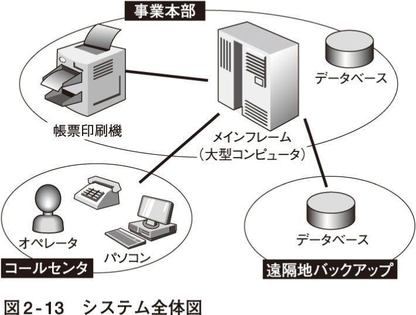

| ウチのシステムはなぜ使えない～ＳＥとユーザの失敗学～ | |
| 岡嶋 裕史 | |
| (2008) | |
目次
情報システムに不満を抱いている人は多い。
業務として使うもの、プライベートで使うもの、自社内で使うもの、他社が提供するもの、分類はいろいろあるが、おしなべて使いにくい。たまにいいものに当たると、おみくじで中吉を引いた気分程度には嬉しくなるほどである。
ずっとそんな状態が続いているので、利用者はすっかり情報システムはそういうものだと刷り込まれてしまった。しかし、今一度考え直してみると、工業製品でこれだけの不満を内包していたらそれは欠陥品と呼ばれるのではないだろうか。それとも、ソフトウェアを含む情報システムは工業製品ではないのか。
情報システムの作り手であるＩＴ業界も、この「どうも顧客満足度が低い」ことには頭を痛めている。さすがに、「ソフトウェアは別物ですから」と言い訳するのも苦しくなってきた。
そこで、もっといいもの（誰にとってのいいものかは、本文でゆっくり議論する）を作るために、さまざまな取り組みがなされているのだが、今ひとつ空転中である。
ＩＴ業界とその担い手たちは、情報システムを飯の種にしているだけあって技術好きである。したがって、「いいものを作ろう」と考える場合も技術に着目する。
その結果、「ＥＡ（注１）にすれば顧客は喜ぶのではないか」「いまＡｊａｘ（注２）が熱い」などと日夜、技術開発に余念がない。
技術者にとって、こういうことを考えるのは面白いのだ。「この案件は技術的な進化の袋小路に迷い込んでしまったのではないだろうか」「旧世代設計に固執した結果、顧客の満足が得られなかったのでは」とケーススタディをやり始めたら、それだけで一冊本が書けそうである。
だが、現状における情報システムへの不満というものは、技術を議論するずっと以前の段階に根っこを持っていると思うのだ。要するに、技術者の作りたいものと、顧客の欲しいものが合致していないのである。
ニーズとシーズ（注３）に違いがあることは多くの人が百も承知で、工業製品を送り出す側もそれなりに熟慮して製品を作っている。なのになぜ、情報システム技術者（ＳＥ）が何かを作ると、顧客が欲しくないものができ上がってしまうのだろう。
本書は情報システムの開発に関わる要素のうち、技術ではなく、ＳＥに着目する。ＳＥを取り巻く職務環境や、ＳＥの仕事の進め方を知ることで、この疑問を解いていこう。
ＳＥとうまいことやるためには、ＳＥを知らねばならない。彼を知り己を知れば百戦殆うからずである。己を知るには哲学書でも紐解くか、結婚すると一週間で哲学者になれるとする俗説を信じるならば、妻や夫を迎えるのもいいかもしれない。ここでは、まず「彼」であるＳＥの実態を知ることにしよう。
ＳＥは主にＩＴ業界に棲息している。
ＩＴ業界。そもそもこの響きがなんとなく胡散臭い。広告業界といい勝負である。関連イメージとしてどうしてもわらしべＭ＆Ａ（注４）長者のホリエモン（注５）や、奥菜恵（注６）の元旦那である藤田晋（注７）を連想してしまう。羨ましいような怖いような、そんな感じである。
一般的にはＩＴ業界で働く人々を、一括りにＳＥと表現してしまうことも多いが、それほど単純ではない。ＳＥとはシステム・エンジニア＝SystemEngineerの略であり、そもそも技術屋さんである。経理や法務にはとんと疎い人がとてもたくさんいる。
では技術屋＝ＳＥと等式で結べるかというとそうでもない。ＩＴ業界にはＳＥでない技術屋さんもたくさんいるのである（図１‐１）。
通常のビジネスパーソンであれば職務内容を容易に想像できる非技術職は除いて、ＩＴ業界の技術職にはどのような職能の人たちがいるのか覗いていこう。
なお、これから言及する職能は、あくまでモデルであって、実際には人手不足などの要因により、各職能を一人の技術者がオーバラップして担当しているケースが多いことを付言しておく。
技術者はまず、取り扱う技術や職務内容によって二種類に大別できる。開発系技術者と運用系技術者である。システムを作り上げるのが開発系技術者であり、でき上がったシステムを動かして実業務を行うのが運用系技術者である。そして、この両者は恐ろしく仲が悪い。
開発と運用はＩＴの両輪であり、どちらが優れているというものではない、というのが建前である。実際、これは正論なのだが、どうしても新規開発を行う開発系が花形で、他人の作ったものを延々と使うだけの運用系が地味に見えてしまう。
システムを稼働させる場合、
要求定義（注８）→要件定義（注９）→設計→開発→検収（テスト）→運用
という手順で業務が流れていくが、これを川に見立て前半を上流工程、後半を下流工程と呼ぶことがある。
職業に貴賤はないといいつつも、なんとなく上流の方が偉そうである。現場の技術者にもこの感覚は染みついている（図１‐２）。
そもそも仕事自体の属性が異なる。開発は新規システムを構築するために、大人数が集まりわいわいと設計やプログラミングを行い、顧客と折衝し、バグ（注10）の発生などさまざまな困難と闘い、カットオーバ（注11）した暁にはえも言われぬ充実感と顧客からの感謝を勝ち取る。
カットオーバ直前は連日の徹夜など苦行も経験するが、納品後にはしばし弛緩の時が訪れもする。
一方で運用系はシステムが完成してから後が業務のスタートである。開発系が一種のお祭り騒ぎで作ったものを、実業務（本番、本番業務などと呼ぶ）の中で安定して動かすのが仕事である。
業務がお金を生み出すものである以上、運用系にかかる責任はむしろ開発系を凌駕する。実際、欧米でも日本でも、「運用系の仕事はとても大事だ。運用系にもっと光を！ 優秀な人材を！ 高い評価を！」とするスローガンが掲げられている。
しかし、このようなスローガンが登場すること自体、運用系の地位の低さを証明している。
この傾向を強化するのは、まず人材面の偏りである。開発系の方がどちらかといえば、創造性を発揮できる（かどうか本当のところは分からない。しかし、そう信じられている）業務内容であるため、新人をはじめ志望する技術者が多い。
一方の運用系は新しいものを作るわけではなく、すでにあるものを動かす仕事である。何かを作りたいと考えて技術者になった人にはフラストレーションが溜まるし、正常稼働で当たり前、何かトラブれば大目玉、という職場環境では神経をすり減らす。
特にインターネットが登場して以来、三六五日二四時間稼働といった、いじめとしか思えないようなシステムが増えているので、システム障害が起これば運用系要員はたとえ午前四時であっても出勤することになる。怒られるために。
さらに暗黒面に踏み込むならば、開発系の失敗や所定動作との齟齬の尻ぬぐいも運用系の業務の一つである。すなわち、システムにあるはずの機能が動かない、マニュアルに書いてあることと違う動作をするなどの、工業製品ではあり得ないような欠陥が日常的に露呈する。
あまりにも生活にとけ込んでいるので、それが一般的な製品の姿であるかのように思考回路が構築されてしまう。ＰＬ法（注12）がソフトウェアに適用されなくて本当によかったと感じている開発技術者はとても多いのである。立法府もさすがにソフトウェアに対してそんな冒険はできない。
そうしたシステムにおける机上設計と実業務の間の埋めがたい溝に自らの身を投じて、なんとか両者の仲を取り持つよう要求されるのが運用技術者の宿命である。まさに尻ぬぐいというのがふさわしい。他人が織り込んだ欠陥を自らの肉体と精神を犠牲に「なかったこと」にするのである。
どのくらい過酷かといえば、自動販売機を上手く製造できなかったので、中に人を入れて見かけ上動いているように見せかけようとするのに匹敵するほどの過酷さである。そして、その程度の過酷さは運用技術者の日常に普遍的に存在している。
このような背景がある上、モノができ上がれば褒められる開発系と異なり、業務のメリハリもつきにくいため、モチベーションを維持するのが難しい。
目のきらきらした新人も半年ほど運用系で働くと、いつか開発系に転属することを目標に社内政治に勤しんだり、業務に誇りを持ちつつも「正当な評価を得られない自分や、自分の従事する職務」に対する歪んだ愛情を育み、ひねちょびれてしまったりすることが多い。
注12 ＰＬ法 製造物責任法。施行以降、工業製品に警告マークなどが激増。（本文へ戻る）
二つめには、待遇の違いがある。
開発系と運用系を比べると、残酷なまでに給与の格差が存在する。開発系が高く、運用系が低いのである。これは、「運用が実は一番大事。運用こそがお客様（ＩＴ業界のお客様とは、システムを使うユーザ企業である）の利益を生み出すのだから」とうそぶいている企業でさえそうである。
人事評定においては、やはり派手な業績シート「○○システム開発！」があった方が有利である。仕事をしているように見える。運用系はいくら真面目に仕事をしても「○○システム無事稼働中」と、華のない業績シートにしかならない。特記事項はすべて何らかの事故が生じた場合である。
査定をする人事の側も、別に運用系に辛く当たっているわけではないのだが、評価しにくいのは事実である。「○○システム開発！」がどのくらいの難易度の案件で、自社にとってどの程度の利潤を生み出したのかを算定するのは比較的容易だが、「○○システム無事稼働中」を業務としてどう評価すればいいのか、定量評価を行うのは困難である（図１‐３）。
こうした条件が重なると、当然、開発系のイスを巡る競争が激しくなり、優秀な人材が選抜される。そうなると、開発系の選に漏れた技術者が運用系に流れるため、両者の間に技術レベルの差異が生じてしまう。余計に運用系には行きたくなくなる、という負のスパイラルが発生してしまう。
運用系に優秀な人材が集まらず、または優秀な人材がせっかく配属されてもすみやかにモチベーションを低下させる環境が整っているのは、現代日本の悲劇である。揶揄しているわけではなく、この運用系処遇問題はきちんと対処しないと、システムの運用精度、運用効率を著しく削ぐファクタとして残存し続けるであろう。
ＳＥと付き合う場合は、このような開発系と運用系の間の微妙な関係を理解しておくべきである。どうも、ＳＥごとに言うことが違うなあとか、業務に対する温度差があるなあとか違和感を覚えた場合は、どの人が開発系でどの人が運用系かをチェックすると、人間関係も含めて理解できてしまうことがある。
先にも述べたように、ＳＥの能力評価や業績評価は難しい。そこで、資格をもって評価や昇進の一つの目安にしようという考え方があらわれた。人事部もその方が楽である。
二〇〇〇年ごろにＩＴ業界では「資格バブル」と呼ばれる現象が起こり、泊まり込みで受験するほど極端に難しい資格や、難しい資格と一字だけ名称の異なる怪しげな資格などが多数誕生した。
筆者のような資格マニアたちはこの状況を喜び、会社のお金で一〇〇にも届こうかという資格を漁り尽くしたが、評価担当者さえすべてを覚えきれないほどの資格の洪水は長くは続かなかった。言うまでもなく、そんなものを評価の基準にするのが馬鹿馬鹿しいからである。筆者など、触ったこともない製品の資格をたくさん持っている。
ただ、自称プロフェッショナルが多く存在するＩＴ業界において、ＳＥの能力や目指しているキャリアの方向性を示す目安が欲しい、というニーズは継続して存在している。そこで、図１‐４のような表が作られた。
この表のレベルに各技術者を当てはめれば、だいたいどのくらいの能力をもつ技術者なのか分かるだろうというわけである。これは経済産業省が推進しているので、企業ごとにレベルの設定が異なったりすることは（極力）ないようになっている。
例えば建築士であれば、一級建築士、二級建築士などの資格があって、素人目にもおおよその能力が分かるようになっている。技術者についても、こうした能力分けの必要性があるのは、当然といえば当然である。
この表のことを「共通キャリア・スキルフレームワーク」という。
ハイレベルの技術者を評価するのは実務経験によるしかないので、企業でご勝手にというスタンスなのだが、レベル１～４についてはペーパーテストで評価することになっている。将来的には色々あるＩＴ系の資格試験が、「この資格はレベル１」などと振り分けられることを目指しているが、今のところもっとも整合作業が進んでいるのが、情報分野で唯一の国家試験である「情報処理技術者試験」である。情報処理技術者試験は、この表に合わせるため平成二一年度からわざわざ試験区分や内容を改訂するほどである（図１‐５）。
これが実施されれば、その人が保有している資格を見ることで、ある程度正確に能力を把握することができるだろう。試験の内容自体は旧来のものとさほど変わらないのだが、その人物がどの程度のレベルかを示す標準的な指標を、会社や国や個別試験の枠を超えて提供したわけである（図１‐６）。
ただ、国家試験に対して、「いわゆるお勉強で実務に直結しない」との批判は根強い。そこでベンダ試験が登場する。これは、マイクロソフトやオラクルなど、実際の製品を作っている企業（ベンダ）が自社製品について能力を問うものである。確かに、センター入試的な国家試験に比べると、実務能力に直結している。多国籍企業が行っているベンダ試験は海外でも通用するなど人気も高いが、技術者としてのポテンシャルを見るには偏った内容であるため、評価に使われる場合は国家試験と併用されることが多い。
共通キャリア・スキルフレームワークとの対応でも、国家試験の場合は「ＩＴパスポートを取るとレベル１全般」という扱いだが、「○○ベンダの××試験に合格した人は、ネットワーク分野についてレベル２」などと評価される。
担当になったＳＥに名刺をもらったとき、ＩＴ系資格試験の名称が肩書き代わりに印刷されているかもしれない。その場合、資格が古すぎるものでないかに気をつけるとよい。情報技術の移り変わりは激しい。いくら偉そうな資格を持っていても、取得が一〇年前で、それ以降勉強を怠っていれば、少なくともその一部が役に立たない知識になっていることは明白である。
また極端に難しい資格を持っているからといって、無条件に信頼したり畏怖したりする必要はない。筆者のように、その業務や製品についての実務経験もろくにないのに資格ばかり持っているマニアが、相当数存在するからである。資格マニアは実業務よりも休日に受けに行く資格試験を楽しみにしているので、「チェンジ」（後述）も含めて付き合い方を再考する必要があるかもしれない。
この事実には驚かれるかもしれない。プログラマというと、かつてＢＡＳＩＣインタプリタ（注13）を書いたビル・ゲイツ（注14）だったり、Ｌｉｎｕｘカーネル（注15）を書いたリーナス・トーバルズ（注16）だったり、「とにかく何かすごい人」というイメージがある。コンピュータに指示を与えるためのプログラミング言語を操り、自在にコンピュータを動かすという感じがする。そのため、プログラマになるためには数学的才能が必要だったり、アーティスト的な感性が要求されたりすると考えている人もいる。
だが、そうした「コンピュータは俺様のともだち」的なプログラマ、新しいアルゴリズム（注17）や斬新な発想のコード（注18）で不可能を可能にするようなプログラマは、全体のごくごく一部である（図１‐８）。
そのため、こうした人々をプログラマと区別してスーパープログラマやハッカーなどと呼ぶことも多い。
では他のプログラマは何をしているのか？
その他大勢のプログラマは、上位にいる技術者（ＳＥなど）が書いた設計図をひたすらプログラミング言語（後述）に訳している。まさに訳しているという表現が適切で、この作業はほとんど翻訳に近い。
システムはいきなり「えいや！」で作り始められるものではない。大規模なシステムは多人数で作り上げるので、設計図は必須である。この設計図は、人間に分かりやすい形で書く。そうでないと自社の経営陣やお客さんに説明しづらいし、何より自分たちもわけが分からなくなる。
技術者といえども人間である。ネイティブな言語はプログラミング言語ではなく、日本語や英語なのだ。
ディスカッションや顧客との調整を経た後にこの設計図は完成するのだが、当然ながらこれをコンピュータがそのまま理解できるわけではない。コンピュータは指示を正確に実行するのは得意だが、指示を与える言語として人間の言葉とはとても相性が悪い。
そのため、コンピュータに指示を与えるためのプログラミング言語が必要なのである。
つまり、上級技術者が作り上げた設計図は、どこかの段階でプログラミング言語に変換されねばならず、それを行うのがプログラマと呼ばれる人たちである。
注13 ＢＡＳＩＣインタプリタ マイクロソフト創業のきっかけになったソフトウェア。（本文へ戻る）
注14 ビル・ゲイツ マイクロソフト会長。億万長者。（本文へ戻る）
注15 Ｌｉｎｕｘカーネル ウインドウズと並んで世界的に大きな影響力を持つＯＳ。ＯＳとはコンピュータの基本的な機能を管理・提供するソフトウェアのこと。カーネルとはＯＳの中核部分。（本文へ戻る）
注16 リーナス・トーバルズ カリスマプログラマ。（本文へ戻る）
注17 アルゴリズム algorithm：処理手順。（本文へ戻る）
注18 コード code：プログラムと同義に使われるが、一つひとつの命令を指す場合もある。また、文字コードのように「文字につける番号体系」の意味で使われることもある。文脈によってころころ意味するところが変わる要注意の言葉。（本文へ戻る）
プログラマに要求される能力は、上級技術者から渡される設計図にどこまで書き込まれているかによって、左右される。
大まかな内容しか書かれておらず、その設計内容を実現するための手段（ロジック）を自分で考えるなら、スーパープログラマにちょっと近い作業といえるし、設計図に詳細なロジックまで書き込んであるなら、本当に翻訳作業というか、知的体力作業、知的単純労働である。
この、「ほんとに翻訳してるだけ」の仕事を特にコーディング、その従事者をコーダと呼んで区別することもある。スーパープログラマの対極に位置するわけである。
ただ、文脈によってはプログラミング＝コーディングの意味で使われることも多く、技術者同士の会話に割り込む場合などは、細心の注意で行間を読む必要がある。両者を厳密に区別している職場で、プログラマに「コーダさん」などと話しかけると、速やかにその場の気温が五度下がる。
中小企業では、設計図が大まかだったり、そもそも設計図を書く人とプログラミングをする人が一緒だったりすることがある。その場合、プログラマには高い能力が要求されることになる。
「中小企業に就職した方が色々な技術が身につくよ」という警句に含まれる真理の一つである。人が足りないので何でもやらされる（経験させてもらえる）のである。
一方、大企業では、設計工程の標準化や文書化が徹底されており、議論の余地がないほどの設計図ができ上がることも多い。こうした環境では、プログラマに要求される能力はさほど高くない。
であるならば、できるだけコストは削減したいので、プログラミングは協力会社さん（ＩＴ業界でよく使われる用語だが、一般的に対等な関係での「協力」はあり得ない。派遣社員さんなどを指す場合もある）にお任せすることも多い。
外資系では、プロパーの社員にはプログラミング業務を行わせない企業もあるが、さすがに自社業務をまったく知らないのもまずいという理由で、新入社員に一～二年ほどプログラマを経験させる企業もある。
しかし、これはあくまで経験、研修の範疇であって、大企業の正社員の給与でいつまでもプログラマをやってもらっていては、採算が合わないというのが企業側の本音である。大卒でＩＴ企業に就職した人で、二五～二七歳くらいまでに次のステップに進んでいない人と仕事をする場合は、何でそんなことになってしまったのか、ちょっと探りを入れてみるといいだろう。
もっとも、プログラミングが本当に大好きで、「生涯一プログラマ」を標榜している技術者もいるので、あまり先入観を持ってもいけないのだが。
プログラマの直上に位置する技術者として登場するのが、ＳＥである。言葉としてあまりにも定着しているせいか、世間にはとんでもなくたくさんのＳＥが存在しているように錯覚してしまうが、厳密に言うと、三〇歳を中心とするプラスマイナス五歳くらいの層に位置する開発系技術者が従事することの多い役職である。
ＳＥはプログラマではない。システムの具体的な設計図を書き、その通りのプログラムをプログラマに書かせることが主業務である。
具体的な設計図とはどんなものであろうか？
ＳＥに対しては、ＳＥよりさらに偉い階層にいる技術者（後述するプロジェクトマネージャやシステムアナリストなど）や営業、顧客がとりまとめた要件定義書が落ちてくる。この要件定義書はとても文学的な言葉で綴られていることが多い。どうにでも意味が取れる文学的修辞など、モノを設計するプロセスに含めるのは言語同断なのだが、顧客、営業、上級技術者の鼎立による微妙微細な政治的駆け引きと妥協の産物として、玉虫色かつ抽象的・形而上学的な要求が突きつけられることが多い。
「メニュー画面から、メール送信までマウスを三回クリックするだけでたどり着ける」
こんな要件定義書は、ざらにある。
三回クリックする間にどんな画面を経るのか？ いや、それ以前にどんな操作体系でユーザインタフェース（注19）を構築するのか？ 聞きたいことは山ほどあるが、要件定義書は答えてくれない。上級技術者も答えてくれない。仮に上級技術者にお伺いを立てる剛の者がいたとしても、「要件定義書に書かれていることがすべてだ」という木で鼻をくくったような回答に、ストレスは増すばかりである。むしろ、前記のような要件定義はましな方で、
「絶妙かつ革新的な操作画面により、子供からお年寄りまで一回でのみ込め、操作ミスもない画面を構成せよ」
などと、一体お前はなんのために給料をもらっているのか、と上級技術者をどなりつけたい衝動に駆られる定義書も多い（図１‐９）。
とにかく、曖昧模糊としたお客の要求を、技術者（プログラマ）に分かる形で書き直さなければ、プログラミングなど夢のまた夢である。これらを技術者が理解できる図法、理解できる表現で設計図として再構成するのがＳＥの仕事である。
注19 ユーザインタフェース userinterface：人間とコンピュータの接点。キーボードやマウス。画面の構成などを指すこともある。（本文へ戻る）
ＳＥが職務に従事するときは、複数人の場合も単独の場合もある。巨大なシステムであれば、設計図はパートごとに細分化されるため、複数のＳＥが協力して行う体制がしかれるだろう。
比較的小規模のシステムなら、単独で設計図を書くことになる。この場合、ＳＥは設計図を書いて終わりではなく、その設計図をもとにコーディングを行うプログラマの管理を遂行することになる。
こんなことを書くと、「おお、早ければ二〇代で部下がつくのか」と思われるかもしれない。確かに部下はつく。業務用プログラミングを書く作業とは、一つひとつのブロックを積み上げていくような作業であり、たとえるなら大工仕事である。一軒の家を建てようと思えば、多くの大工の協力が不可欠であり、であればこそ、若いうちから人の上に立つ局面も多くなる。労働集約産業の特徴である。
ただ、上司になるのはそんなにいいものではない。近年、出世したくないビジネスマンが増加傾向にあるが、特にＳＥにおいて顕著である。もう少し正確に表現するならば、偉くはなりたいし、いばりもしたいのだが、部下を持ちたくないのである。
偉くなってしまうと、せっかく好きで就いた情報技術の仕事から遊離してしまう羽目になる、というのも理由の一つだが、おそらく最も大きな理由は、プログラマ大工たちがおそろしく管理しにくい部下だからである。
プログラマの職場環境もこの勘違いを非常に助長しやすい面がある。外資系ソフトハウス（注20）やベンチャー企業では、私服での勤務が当然視されているし、出勤時刻や退勤時刻の管理もゆるやかである。
技術者はあまり客先に出ることもなく、高度なプログラムのような成果物は勤務時間の長短によってできたりできなかったりするものではないので、それはそれで合理的である。シリコンバレー発のベンチャーには大学の研究室の延長のような企業も多いので、その影響も確実に受けている。
だが、それはあくまで「高度なプログラム」を作る場合であって、通常業務を情報化するようなシステム（そして、世の中のほとんどのシステムはこの範疇に属する）では、奇跡的なアルゴリズムもアクロバティックなプログラムも要求されない。堅実で地道な努力が実を結ぶ、極めてまっとうな業務なのである。
したがって、プログラマたちの元締めであるＳＥとしては、「ちゃんと朝来て働き始めて、夜には帰れよ！」とか、「変なひらめきで妙なプログラムなんか書かずに、設計図通りに作ってくれ！」とか色々言いたいのである。
ＳＥにとってプログラマは大工さんであり、自分の引いた図面通りにコードを書いてくれれば十分なのである。
だが、プログラマたちは言う。
「俺たちの仕事には、インスピレーションが重要なんだから、グーグル（注21）みたいに社内にレクリエーションセンタを作って欲しい」
「設計図より、いい動作論理を思いついた。設計図通りのコードを書くなど、俺のプライドが許さない。変更させてもらおう」――その結果、つながるはずのパーツ同士がつながらなくなったりするのである。
この、プログラマはアーティストか大工さんかは、ＩＴ業界にとってかなり重要な命題である。本来であれば、組織において業務を行う以上、プログラマは大工に徹することが望ましい。大工さんは、自己主張の強い「作品」を作り始めて、家のバランスを崩してしまうようなことは決してしないのである。
表現を変えるならば、システムは音楽である。一つの旋律だけでは交響曲を維持できないように、一つのコードだけではシステムは構築できない。「交響」できない人間のたった一行のコードが不協和音になり、システムをダウンに追い込むこともある。
アーティスティックかつアクロバティックなプログラムを書きたいのであれば、休日に趣味で作るか、スーパープログラマを目指すべきである。
この問題が悩ましいのは、プログラマを求人する際に、まるでアーティストになれるかのような惹句を使わざるを得ないことである。
ＩＴ業界はだいたいいつも人手不足である。ハードウェアやソフトウェアの進化はあまり経済条件に左右されず、断続的に行われるため、不況だからといって急に新規案件がなくなるわけではない。むしろ、最近ではカタカナ職業の魅力も霧散し、とても３Ｋ（きつい、帰れない、給与が低い）な職場であることが白日の下にさらされてしまったので、好況ともなれば、売り手市場になるのは必至である。かつてバブル期に本邦にも存在した伝説の「人手不足倒産」が現在でも起こりうる産業なのである。
そんな中でＩＴ企業各社は凄惨な学生争奪戦を繰り広げている。その修羅場の中では、「プログラマは来る日も来る日も設計図通りのコードを選択してタイプする、単純労働ですよ」などと口が裂けても言えない。夢と希望とＧＵＩ（注22）が満ちた職場、職種であらねばならないのである。
曰く、
「社会人になっても、スーツを着る必要はありません」
「研修がすめば、出社退社時間は比較的自律的に決定できます」
「最先端の技術を駆使した、知的好奇心に満ちあふれた職場です」
もし本当にそんな職場ならば、わざわざ頭を下げて学生に来てもらうようなまねをするはずはないし、実際には学生もほとんどはプログラマの実情を理解して就職する。
だが、中には純真な学生がいて、本当にクリエイティブな職業だと考えてプログラマになる場合もある。これ見よがしのビジネスカジュアルに、なぜか外出時にも首から下げた社員証を外さない社員ができ上がってしまうのである。
余談だが、あのように自分の名前を公道でさらす行為はセキュリティ的にどうだろう。「校舎を出たら、名札は外しましょう」と最近の小学校では教えないのだろうか。本来セキュリティのためにやっているはずのことが、本末転倒の人体標本として機能している。ネクタイの束縛から解放されて喜んでいた人々が、社員証の呪縛に愉悦を感じるのはなんとも遺憾なことである。
踊らされたプログラマも可哀想だが、そんな彼らを部下として業務に邁進しなければならないＳＥも可哀想である。ＳＥは日々、「締切を守ってくれ」「設計図にない動作を組み込まないでくれ」と呪文か祝詞か真言のように唱え続けているのである。
注22 ＧＵＩ GraphicalUserInterface：先述のユーザインタフェースのうち、視認性が高く、直感的に操作できるもの。マウスとアイコンで操作するパソコンなど。文字とキーボードからなるＣＵＩより簡単そうで、人気がある。（本文へ戻る）
なお、社員勧誘の段階では、「文系出身の方でも大丈夫」と太鼓判を押されることがある。この太鼓判は実印登録されているわけでもないので、大丈夫でなかった場合も誰が責任を取ってくれるものでもない。しかし、往々にして大丈夫なことが多い。
一つには、先述したように、業務で書かれるプログラムにおいて、極端に高度な処理が行われるケースは少ないためである。
むしろ、チームプレイである以上、コミュニケーション能力や調整能力、体制順応力の方が重要なので、文系出身者が積極的に採用される（別に、理系出身者にコミュニケーション能力が欠けると言っているわけではない）。
もう一つは、ＳＥの職務において、文書作成の占めるウェイトが非常に大きいためである。ＳＥは文書ばかり書いている。設計図もまあ文書といえば文書だし、言うことを聞かないプログラマのために、
・プログラムの中には、他の人が読んでも分かる日本語の注釈をつけましょう。
・このプロジェクトにおいては、××という曖昧な用語は、△△の意味で使います。打ち合わせ時には誤解のないようにしましょう。
などといった文書まで書く。作業工程表や進捗管理表も作る。
用語の統一やプログラムの書き方などは、いちいち取り決めなくてもよいように国際標準規約があるのだが、誰でも使えるように標準化された規約というのは、誰にとっても痒いところに手が届かないものになりがちなので、なぜか現場のＳＥが書く羽目になったりする。
部下からは仕事がやりにくいと突き上げられ、上司からはなぜ国際規約があるのにお前がこんなものを作る必要があるのかと怒られる。割に合わない仕事である。
では、偉くなると文書を書く仕事から解放されるかというと、ますます増える。誰も守らないと分かっていてもセキュリティポリシ（注23）を制定しなければ、社会に対して申し開きができないし、誰も読まないと分かっていても個人情報に関するコンプライアンスマニュアル（注24）を作成しなければ、消費者団体から抗議される。
ペーパーレスな社会を作ると期待されていた情報化社会が、実際には書類の量を極大化させているのは、何とも皮肉な話である（コンピュータというのは使えば使うほど油断のならないものに思えてくるので、「最後に信用できるのは紙だ」と考えている技術者はとても多い）。ＳＯＸ法（注25）が完全導入された暁には、書類の津波で圧死するＳＥも出現するだろう。恐ろしいことである。
一般的には三五歳くらいまでに次のステップ（職種）に進まないと、業界内における存在が危ぶまれるといわれている。その「三五歳ＳＥ定年説」は、加齢とともに新しい技術知識を修得する速度や能力が鈍磨するから、と解釈されているが、むしろ徹夜に対する耐性が下落することの影響が大である。
また、ＳＥという言葉が持つ魅力（登場当初は確かに一部の人々には訴求するものがあった）の逓減、いやむしろＳＥという言葉が持ってしまった魔力によってＳＥ就業人口が減ることを恐れたＩＴ業界は、古い酒を新しい革袋に入れる要領で、ＩＴアーキテクト、シニアプログラマ、○○スペシャリストなど大量の役職用語を創造した。創った以上は、誰かを充当しないと格好がつかないので、ＳＥがここに押し出されていなくなるのである。しかしこれらは「十把一絡げのＳＥではなく、あなたにしかできない仕事の特別感」を演出するための呼称であって、課長補佐代理見習心得くらい意味のない言葉である。（「まずは営業さんと面談」へ戻る）
こんなもので鼓舞される人材は、少なくとも心ある人々の中にはおらず、目論見とは真逆に作用し、現場ＳＥの脱力感をがりがりと誘発している。
ＳＥの中に含めてしまうこともある職種である。最近ちょっと流行った言葉なので、ご存じの方も多いかと思う。
プログラマはやんちゃ芸術家のような人を含み、ＳＥはプログラマの延長線上に位置している。ＳＥには管理職的な含意もあるが、どちらかといえば、技術者が似合わない管理職のお仕着せを着て無理をしている印象も強い。七五三のようなのである。
この人たちに「工業製品として実用に耐えうるプログラムを作れ！」と下命しても、とても心許ない。大勢の技術者がよってたかって作り上げる大規模システムなら、なおさらである。
なぜなら技術者は、
１、予算に無頓着
２、納期に無頓着
３、設計図に無頓着
だからである。
もちろんこれは極論であって、ビジネスパーソンとしての本分を守っている技術者が大半である（ほとんどとは表現できない）。だが、大規模なものを作るときは、一人の作業の遅延が全体の作業の遅延を容易に誘発するため、一人でも芸術家風技術者が紛れ込んでいるととんでもないことになる。そして、大規模システム開発の現場には、必ず一人や二人は「アーティスト」が交じっているものである。
ならば、進捗管理を主な業務とする専任職を作ってしまえ、と勢いよく設定された職種がプロジェクトマネージャである。
ＳＥの進捗管理が上手くいかないのは、自分も技術職の要素を色濃く残した存在であること、自分の技術作業（設計図書き）の合間にプログラマを統括するという二足のわらじをはいていることが強く作用している。
ならば、専任の進捗管理係たるプロジェクトマネージャを設置して、がりがりぎりぎりと締め付ければ、嘘のように品質や納期の水準が向上するだろう。いいことずくめである。
しかし、世の中にそんなにうまい話があるのだろうか。あるはずがない。（「ＳＥ」へ戻る）
プロジェクトマネージャは、大変苦戦している。理由は色々言われている。一つには、現在第一線で働いているプロジェクトマネージャが、必ずしも技術畑出身でない――営業・管理部門の出身者が多い――ことが挙げられる。ＩＴ産業はまだ若い産業なので（もう、そうでもないが）、技術者として新卒で入社した社員が十分に育っていない企業も多い。
そこへ抜き打ちのように、「これからはプロマネを入れる」との託宣が下ったため、技術者をプロマネに育て上げる時間が取れず、一般管理職をプロマネに充てているケースがある（社外からヘッドハントされてくる人も多い）。
これは必ずしも悪いこととはいえない。情報技術のスキルと、人材管理・進捗管理のスキルは別物で、それぞれが修得に膨大な時間を要する以上、人材管理・進捗管理に特化した上級管理職が登場するのはある意味で必然である。
似たような構造は建築現場にもある。現場作業員に求められるスキルと、彼らと彼らの作品を管理するスキルとは全く別種で、それぞれに専任の要員が充てられる。両者は互いの立場の差異に起因する反目を抱えつつも、協力して業務を遂行している。
ゼネコンの建設現場で、叩き上げの大工さんと大学で建築管理を学んできたなまっちろいエリートが対立するような光景は、端から見ていればほほえましい。
ＩＴ業界の作業現場は建設業のそれと非常によく似ている。顧客の要求があり、それを業界知識と業界用語によって変換した設計図があり、設計図をもとにブツが作られる。ブツを作るために確立された方法論と使い回しのきくパーツがあり、多くの現場ではパーツを組み合わせることによってブツを完成させてしまうことさえ可能である。
ブツの生産工程に、親会社─下請け─孫請けのラインがあるところまで酷似しており「ＩＴゼネコン」などの用語すらある。
先にも述べたように、これはプログラミングの一般的なイメージにはそぐわないかもしれないが、建築現場で造られる建築物と工房で作られる芸術品が本質的に全く異なるものであるように、一部の数学的陶酔感をもたらすプログラムとビジネス製品として出荷されるプログラムもまた本質的に異なる。ならば、建築業が脈々と構築してきた現場作業のノウハウを、ＩＴ業界にも活かそうとする努力の方向性はおそらく正しい。プロジェクトマネージャの台頭はいわば歴史の必然である。
ただし、ただしである。建設業においてこの種の職能者が現れ成果を上げたのは、血を吐くようなノウハウの集積プロセスを経験した後のことである。
ＩＴ業界は建設産業と比較すればお話にならないくらい若い業界であり、プロジェクトマネージャはその中に突如として出現したオーパーツ（注26）である。その時代に本来登場すべきではない技術や人物がいきなり登場しても、真価を発揮することは極めて困難である。
小学校時代に「過去に行って人工衛星の話をしたら、神様だと思われるよ」と話してくれた先生がいるのだが、なんてオプティミストだろうと子供心に感心した。私には与太話を吹く狂人として扱われるようにしか思えなかったからである。
そもそも、例えば縄文時代に「ひまわり」を持ち込んでも、縄文人が気象情報を得られるものではない。
プロジェクトマネージャを取り巻く状況はこれに似ている。大学院でＭＯＴ（注27）を学んだ精鋭が颯爽とプログラミング現場に登場したとしても、彼（彼女）を受け入れる素地がまだできていないのである。
建設業では当たり前のネジのサイズの標準化だの、用語の統一だのがなされていない。場合によっては契約書さえ交わさずに開発が開始されている現場で、「ＰＭＢＯＫ（注28）だ！」「ＩＳＯ１０００６（注29）だ！」と叫んでも、「先に物差しの長さを統一しておこうよ」という話になる。
そのためには、プロジェクトマネージャクラスの上級管理者でも各部署・各人員間の調整を行うために技術的知識を保持しなければならず、プロジェクトマネジメントスキルのみで業界に己を立身屹立させることが難しいのである（図１‐11）。
それでは、技術者からたたき上げたプロマネが登場すればよいのであろうか。
確かに開発技術者の階段を上ってプロジェクトマネージャまでたどり着いた人材であれば、技術者の機微も、開発現場に特有の用語も暗黙知も、現在のプログラミング現場をマネジメントするスキルを持っているであろう。
ＩＴ産業が成熟するにつれ、こうした人材の絶対量は増大する......はずである。プログラマが作業に忙殺され、ＳＥへの階段を上るのに必要な技術を研鑽する時間がなかったり、人員不足でＳＥがプログラマの業務を代替しなければならず、プロジェクトマネージャへと至る知識を習得する時間がなかったりする悪慣習を打破できれば――。
だが、それは結局のところ、プロジェクトマネジメントの体系的なスキルやノウハウで管理を行っているわけではない。理論や決めごとを逸脱した部分で、頭を下げたり脅したりといった属人的な調整が実施されているだけである。
こうした管理手法を用いるプロジェクトマネージャ亜種の管理者では、やはりプロジェクトをきちんと管理することは――特に大きなプロジェクトの場合は――、難しい。
属人的手法で調整できる問題には質・量ともに限界サイズがあり、ある規模以上のプロジェクトでは、その閾値を軽々と超えてくる問題が生まれるからである。
また、技術屋あがりのプロジェクトマネージャなら現場技術に精通している、との期待すら幻想であるかもしれない。
ある技術に精通した人間であれば、その技術の背景構造を理解し、末端技術が新しく生まれ変わっても本質を見極めることができる、という意見は理屈としては正しいのだが、実際にプロジェクトマネージャの職務を全うするためには、末端技術の知識が必要とされる局面がある。
その栄枯盛衰は非常に激しく、諸行無常の響きすらある。ある程度の年齢になって、「これからは経験を糧に飯を喰っていこう」と考えていたのに、若い技術者と同じ土俵で新規技術を習得しなければならないプレッシャーは厳しい。
この状況にさらされたプロジェクトマネージャは、それなりの確率でバーンアウト（注30）に陥るか、開き直って暴発する。ＩＴ企業が集中する地域に心療内科が多いのは隠すべからざる事実である。
開き直っての暴発は多くのバリエーションがあり、なかなか代表的な事例を挙げるのが難しいが、比較的穏やかな例としては、過去に生じた修羅場をいかに自分の機知で切り抜けたかをエンドレスに話す語り部として勇名を馳せる形式がある。
もちろん、過去技術の物語など現在の問題に適用できる要素は少なく、かつそのプロジェクトマネージャが真に有能な人物であった場合、そもそも業務において修羅場など顕現させるわけがない。したがって、「その話にどのくらい付き合えばいいのか」というコミュニケーション能力を下級技術者（プログラマなど）に研鑽させる以外、あまり役には立たない。
プロジェクトマネージャという職種が、その機能を十全に発揮するためには、ＩＴ産業全体が今少し成熟する必要がある。それまでプロジェクトマネージャの整腸剤を手放せない日々は続き、開発作業は間接的に製薬産業に貢献するのである。
注30 バーンアウト burnout：燃え尽き症候群。（本文へ戻る）
プロジェクトマネージャは軍隊における大尉のようなポジションなので、そこで打ち止めの人もいるし、さらに上位を目指す人もいる。上位を目指すにしても、より経営にコミットしていくか、より高度な立場で現場との結線を保つかがそろそろ分かたれてくるのである。
経営者について語るのは本書の目的ではないので、まず、システムアナリストの話題から触れていこう。システムアナリストには、基本的にはプロジェクトマネージャを経てなるが、ＳＥから直接なる場合もある。
そのほかにも、開発技術者としてのキャリアパス（出世の道筋）から外れたところに、営業、人事などの技術者にとって敵だか味方だか分からない人々がいるが、これは後述する。
このケースでは、顧客が現在の業務を「そのまま」ＩＴ化することに固執している。ＩＴ化すれば仕事の効率が上がるだろう、という漠然とした期待があり、でもせっかく習熟した従来の作業を変えたくない気分も多分にある。
顧客としては当然の欲求であり要求だが、手作業には手作業の流儀があるように、ＩＴ化した業務にはＩＴ化した業務の流儀がある。手作業で最適だった仕事のやり方が、ＩＴ化済み作業で最適であるとは必ずしも言えないばかりか、むしろ異なることの方が多い。
せっかく高いお金をかけてＩＴ化するのであれば、多少今までと仕事のやり方が異なることになっても、従来の手法では不可能だった業務やサービスを可能にするなどの高度化や効率化を追求した方が吉である。
ＩＴ化された慣れない作業手順で、一時的にせよ却って仕事の効率が悪くなることを懸念するのは当然だが、それは習熟によっていくらでも埋め合わせることができる。
もちろん、ＳＥによる基礎設計が悪ければこの限りではないが、「悪い設計」にさせないための手練手管は本書でゆっくり練習していただければよい。
少なくとも、仕事の高度化によるメリットと、新しい仕事の進め方による各種のデメリット（習熟コストなど）のバランスポイントは追求するべきで、手作業の仕事のやり方を一つも変えたくないのであれば、ＩＴ化する必要そのものがないケースが多い。
ＩＴ化しなくてもきちんとまわる仕事はこの世にたくさん存在する。無理にＩＴ化することはないのである。中途半端なＩＴ化はお金ばかりかかって不満を購入する自虐的な遊戯として幕を閉じる。
そうならないように、システムアナリストは手作業の単なる情報機器への置き換えの弊害を説いたり、ＲＯＩ（注31）が最適になるようなＩＴ化の提案を行ったりする。（「ＳＥ」へ戻る）
注31 ＲＯＩ ReturnofInvestment：投資収益率。（本文へ戻る）
「何だか最近、今川焼きの品質にばらつきがあるんだ」から、「経営層が無理矢理ＩＴ化予算をつけたんだけど、何をしたらいいのか分からない。とにかく予算を消化したい」まで、あなたの悩みを解決します的業務である。
そう考えると、システムアナリストが何だかいい人のように思えてくるが、現実には海千山千の人々が多い。それはまあそうである。顧客の財布の紐がゆるみかけている現場に立ち会うわけだから、いい人なだけでは仕事が成立しない。
心の中では「あぁ、その案件、特にＩＴ化する必要はないな」と判断したとしても、そんなことは口が裂けても言い出さない。言い出されても顧客側も困ってしまう。
一応、ＲＯＩなどの指標を持ち出して、××億円の投資に対して、△△億円の効果が得られ、費用対効果は抜群です、などの甘言を弄して顧客を安心させるが、そもそも実態の見えない情報システムのことだから、統計資料群などいかようにも提示することができる。
むしろシステムアナリストは、いかに顧客の信頼を勝ち取るかに腐心しているといえよう。ＩＴ新興宗教の教祖のような存在で、言っていることは「この壺を買えばあなたの会社は安泰だ」に近い。本当は、その壺を買うと、どのようなプロセスがどのような作用をもたらし、会社の業務にどう貢献し、結果としていくら得なのかを示したり議論したりしなければならないのだが、よく分からないのでしない。
顧客の側もオーナー社長ならばともかく、所詮は会社の金だし、導入効果を定量的に評価するのも困難なので、あえてめんどうくさい議論に踏み込まないことが多い。確信犯的に、システムアナリストが提示する美しい数字に積極的に酔い、契約に至る。
システムアナリストもめんどうくさくないし、顧客もめんどうくさくない。獲得・消化する予算の中で技術ミーティング、先端事例視察などと称して会食か旅行にでも行くことが叶えば、すでに二人は桃園の誓いの仲である（図１‐15）。
もちろん、こんな顧客とシステムアナリストばかりではないのだが（ほんとうだろうか）、そうなりそうな構造を多分に有している関係であるとはいえる。
システムアナリストを十全に活用するためには、顧客側も自社が抱えているトラブルを詳細かつ体系的に掌握して、このように業務を改善したいという明確なビジョンと意思を持つ必要がある。そのビジョンが技術屋から見て、多少的外れであっても何の問題もない。
「ちょっと技術知識がなくて自分で書くのは恥ずかしいので、アナリストさんに丸投げで」などという奥ゆかしい顧客もいるが、技術知識がないのは全然恥ずかしくない。そのためにシステムアナリストに高い金を払うのである。
結局、業務を行うのは顧客自身なのだから、自らこうしたいというビジョンがなければ、何だかよく分からないシステムができ上がるのは必定である。
ただ、アナリストの言うことを頭から否定するのももったいない話である。先ほどのケースでも紹介したが、自分ではいいと合理的に判断している事柄でも、技術的見地からは別の判断が行われることもある。重要なのは、互いにかみ合わない言葉でもよいから、よく議論することである。顧客とシステムアナリストの信頼関係の構築は、その後のシステム開発を大きく左右する。旅の出発点と同じで、最初のステップを間違った方角へ踏み出すと、後になるほど修正が困難である。
自分自身が属する業界の言葉でいい。システムアナリストとしっぽり話し合うことを恐れてはいけない。
なお、似たような言葉としてシステムコンサルタントがある。これは、この節で述べたシステムアナリストとほぼ同じ職種を指す用語である。
無理矢理区別をつけるとするならば、アナリストは技術志向、コンサルタントはやや経営志向、あるいはアナリストは社内志向、コンサルタントは独立開業志向が強い、などと言えなくもないが、牽強付会である。
耳触りのよい言葉なので、乱用が進み、現在ではちょっと経験の長いＳＥがシステムコンサルタントと刷り込まれた名刺を持って歩いていることもあるので、注意が必要である。
営業さんとは、実際に仕事を取ってくる職能にある人々である。実際のところ、技術者にはニーズだのシーズだの費用対効果だの、そんなものはどうでもいいと考えている人々も相当数紛れ込んでいるので、この営業さんはＩＴ企業にとって神にも等しい存在である。技術者がコンピュータというおもちゃを使って遊んだ結果得られる成果物を金に換えてくれる魔術の持ち主だからだ。
神にも等しいはずなのに、技術者たちはなぜか営業さんと仲が悪い。こんなふうに表現すると、開発系技術者と運用系技術者の反目の話などを思い出し、「技術者というのは喧嘩ばかりしているのではないだろうか」と不安がる読者もいらっしゃるかもしれない。実際に喧嘩ばかりしているのである。
なぜ喧嘩になるのだろうか。
技術者に言わせると、「営業というものは、できもしない案件をほいほいと引き受けてきてしまう」。
営業さんに言わせると、「技術者というものは、顧客の要求する技術ではなく、自分が使いたい技術をもてあそんでいる」。
どちらも真実である（図１‐16、図１‐17）。
【技術者の言い分】
技術者は技術に拠って立っている。自らの技術は技術者にとって飯の種であり、レーゾンデートルであり、子供であり、己自身である。したがって、心ある技術者であれば、新規技術修得の機会を常に狙っている。営業はいくつもつまらない案件を取ってくるが、どれもこれも枯れた技術を使って実現するものばかりである。そんな仕事ばかりこなしていては、自らの技術がさびつくだけでなく、自分が技術の最先端から取り残されてしまうのではないかとおびえてしまう。
たまに目新しい案件を拾ってきたかと思えば、とんでもなく困難かつ蓄積した技術と無関係な業務で、平たく言えば完成させる自信がない。なんでうちの営業は、もっと心躍る、俺の得意な案件を取ってこないのか。
【営業さんの言い分】
営業さんはシビアな損益に拠って立っている。自らの地位は会社にもたらす利益をベースとしており、そのためにはより多くの仕事を取ってこなければならない。使用する技術が面白いだの、面白くないだのは二の次、三の次である。働かなければどうやって飯を喰うのか。まして、使いたい技術があるから、それに合致する顧客を探せなど、言語道断である。顧客が欲しがっているのは結果であって、プロセスではないのである。
また、せっかく取ってきた仕事が実現不可能とは如何なものか。最終的には手作業を介してでも実現してみせるのが技術者ではないのか。
短期的な損益判断の視点では、営業さんの方が正しいようにも思えるし、誰でも実現できるような技術であればいずれ価格競争に追い込まれ、消耗戦になるのは必至なので、新規技術を試したいとする技術者の意見にも一理あるように思える。
自社のスキルで実現不可能な案件を取ってきてしまった場合は......「責任」と書かれたカードを押しつけあう壮大なババ抜きの幕が上がることになる。
本来であれば、高度に統一された意思のもとで、技術修得ビジョンと業務獲得ビジョンが共有されなければならないのだが、互いに対する無理解と反目のためにバラバラに行動して互いに不満を抱え込む、生徒会の派閥抗争のような状態に陥っているのである。
この状況を打開するためには、営業さんに技術知識を、技術者に営業知識をそれぞれ持ってもらえばよい。いや、いっそそれを押し進めて我が社の営業はみな技術者として務まる人材にしようとか、うちの技術者はみんな営業ができるようにならなくちゃ、などと極端な社是を掲げている企業もある。
いわゆるシステム営業、テクニカルソリューションアドバイザなどの肩書きを持つ人々である。まあ、要するに「技術をかじった営業」とか、「人見知りしないＳＥ」程度の意味である。
理屈の上ではなんだかうまくいきそうにも思えるのだが、やはり二兎を追う者......になっているケースが多い。営業もこなして、技術研鑽もこなして、自分が取ってきた案件の開発も行って、では、冗談ではなく冥府の扉が開いてしまう。
かといって技術畑からの叩き上げの人を営業に転向させると、相乗効果が得られるのは最初の数年で、結局は技術遷移が進みプロパーの営業のようになってしまうし、逆の転向は成功しないことが多い。
顧客の立場でＩＴ企業の営業さんと付き合う場合は、その営業さんがどの程度の技術知識を持っているかをシビアに見極めなければならない。困難でもやり遂げなければならないミッションである。でないと、とんでもない作品が納品されることになる。営業さんの技術知識に不安を感じたら、迷わずに技術者も同席してもらおう。「システム営業」など、便利な肩書きに惑わされてはいけない。
建築の打ち合わせをする際には、営業さんの他に建築士が同席する。これは、技術的な質問に対応したり、技術的な可否判断が生じた場合に、技術的見地で本当に実現可能かどうかを確認するためである。
営業さんが仕事を取りたい一心で、能力を超越した仕事を請け負ってしまわないための牽制であり、顧客の安心を勝ち取るためのセレモニーでもある。
こうしたプロセスを経ることは、ビジネスである以上は当然であるはずなのだが、なぜかＩＴ業界ではこのステップを回避してしまうことがある。いや、多い。
ＳＥがシャイで人前に出られないから？
業界的慣習だから？
顧客が奥ゆかしいから？
どれも合理的な理由にはなり得ない。
ＩＴ業界には現在、外的・内的な圧力によって、「取りあえず自己改革しなくちゃ」「少なくともポーズくらいは取らなきゃ」という機運がある。そこで、個人情報保護法を遵守してみようとか、ＳＯＸ法には完全対応しておこうとか、色々試しているのだが、これはあまり顧客を幸せにしていない。改革の方向というか、何かを行うべき階層がずれているのである。
個人情報保護法などは、むしろ顧客の望む個人情報保護との意識差が大きいため（顧客は、簡単に利用でき、自分の個人情報は守られ、他人のは法律の範囲内で運用しやすいものを望む）、「安全に個人情報を活用しよう」という法の精神と異なる、「非常に個人情報を活用しにくいシステム」が大量生産されている。これはほとんど、一人遊びか自己満足の世界である。
そんなことをして遊んでいる暇があるなら、意思疎通に関する悪癖を改革した方がよほど社会の高度化やＩＴ業界の成熟に寄与することは間違いない。
顧客側も、ＩＴ業界はちょっと商習慣が違うみたいだから、技術知識がないから、などと尻込みせず、「技術者も同席してください」「今の説明は専門用語で分からないので、一般的な言葉で言い直してください」と主張していいのである。というか、しないと大損である。
ＩＴ業界といえども、リアルな社会に根ざして活動を行っている企業群であり、「こちらの常識」を主張することはもっともなことである。「あちらの常識」と軋轢を起こすこともあるかもしれないが、それはそのときに話し合えばよい。
現在の顧客とＩＴ企業の関係は、すれ違う父娘のように「お互いちゃんとやっているんだろうな」とか「住んでいる世界が違うから、あまり口出ししない方が上手くいく」だのやっている間に、修復不能な間隙を生産し続けている。
違う世界に属する言葉でも、一度は誤解が生じるかもしれないが、喋らないよりはましである。コミュニケーションをきちんと取れば、営業さんや技術者はもはや敵ではなく、仲間である。
開発が終了して開発系技術者の宴が終了すると、運用系技術者のいつ果てるともない日常がスタートする。ときに彼らはオペレータと呼ばれる。
開発系技術者には、システムをカットオーバさせるというモチベーションがあり、その暁には一時金が出たり、休みが取れたり、自己満足に浸ったりする。仮に、あるいは恒常的に、「この仕事は嫌な仕事だなあ」と考えていたとしても、取りあえずいつの日か開発は終了するのである。終了しないと自己の存立があやうい。たとえ、次の案件もろくでもない案件だという確度の高い予想がなされていても、「このトンネルを抜ければ」という幻想や期待を抱く自由が彼らにはある。
それに対して運用系技術者の業務は極めて整然としている。
運用系技術者の仕事はいつ終わるのか？ 終わらない。終わるのはそのシステムが破棄されるときである。有用なシステムであり、堅牢に運用されていればいるほど、運用系技術者の仕事は終わらない。その姿は王子のキスを待ち続ける眠り姫のようである。眠り姫は意識がないからまだしも、運用系技術者には意識がある分、苦行である。
そして、運用系技術者はクリエイティブな仕事をしてはいけない。プログラマもそうであったが、それ以上に手順を遵守・墨守して業務を遂行しなければならない。
これには説明が必要だろう。
まともに設計されたシステムであれば、必ず「変な使い方」に対する耐性（フールプルーフという）がチェックされてから出荷される。世の中には機械に対して、信じられないような妙な操作を行う人がいるからである。当然、世の中で使われている業務システムも同様の検査を受けている。だが、検査にかかる手間、工数（注32）、コストはなかなか馬鹿にならない。
加えて、ウインドウズやプレイステーションなどと違って、業務システムのコア部分は専門の運用系技術者が操作を行う。それなりの教育を受けた彼らが、アクロバティックな操作や論理的に破綻した操作を行う可能性は低い。
そこで、チェック工程がやや甘くなる。コンシューマ（注33）と違って運用系技術者はコントロールできるのだから、詳細なマニュアルを手渡し、それを遵守してもらえばよい。人間だから操作ミスは織り込まなければならないが、ハードディスクをクリーニングしろと言われて、コインランドリーに行くような人はいないはずだ。
これは合理的であり、正しい。システムにとって、フールプルーフは大切な指標だが、どのレベルの人間が使うかによってその精度を柔軟に変更すれば、コストを削減することができる。
そのような経緯により、運用系技術者には鈍器として殺人にも使用可能なほどの分厚い操作マニュアルと操作手順書が下賜され、それを守るよう要求されるのである。手順を守らなかった場合の責任は、開発の人間は取らないよ、というわけである。
どんな仕事でも工夫次第で面白くなるし、創造力や創意工夫を発揮することができる、とは生業に就くものとしての至言であるが、さすがにこのような職場では創造力を発揮するのは困難である。
トラブルを起こさないことが至上命題であり、そのためのプロセスとして操作手順の墨守が要求される。運用の現場には奇妙にしんとした気配が漂い、体温の低い草食動物のようなオペレータが機械の林立する空間にたたずむ。エデンの東か失楽園のような光景が展開される。なかなか味わい深い風物であるが、新入社員が新人研修に赴くと、少しだけ鬱になることもある。
オペレーションルームの描写は類型化しにくい。ブレードサーバ（注34）が整然と並び、塵一つ存在を許されない無菌室のような部屋に、完全自動化されたコンソール（注35）、幾人かの社員証を首から下げたネルシャツのオペレータ、という映画の一コマに使えそうな環境もあるし、いかにもそれっぽい手塚治虫か松本零士の劇画のようなオープンリール（注36）の大型コンピュータが雑然と屹立し、トラブルを知らせるための用途には明らかにオーバスペック（過剰性能）なのではないかとの懸念を覚えずにはいられないパトランプ（注37）や、何十人もの作業着のオペレータを配置したオペレーションルーム＝運用現場もある。
近年ではインターネットという人の時間を貪り喰う悪魔のようなインフラが普及したおかげで、オペレーションの仕事は非常にきつくなっている。三六五日二四時間体制運用など、オペレータに対するハラスメントにほかならない。
三直体制（三交代制）が敷かれている現場などはまだいい方で（実際には三直勤務もかなり肉体・精神を酷使するが）、二交代制で二四時間運用を行っている現場では、確実に短年度離職率や疾病率が高まる。
本書は主に顧客の立場でＳＥと付き合う方法を論考する書物であるが、間違って将来オペレータを志望する人が手に取っている可能性を考えて警告する。志望する会社に小綺麗な仮眠室や遊戯室、シャワールームが完備されているからといって、感動したり感謝したりしてはいけない。つまり、家に帰れない会社だということである。
オペレータにもっと光を。もっと給与と有給休暇を。
一方ですでにオペレータとしてかなり長い職務経験を持つ人は、己の仕事に大いに誇りを持つべきである。どんな最先端の技術を駆使しようが、世界的に有名なクライアントが発注したシステムだろうが、オペレータのイニシエーション（初動操作）がなければシステムは稼働しないのである。オペレータはシステムを動かす神であり、世界の動作原理そのものである。
オペレーション勤務が長いと、少しずつ瞳孔が開いてきたり、目を開けて夢を見たり、目を閉じて生きていったりするスキルが洗練されてしまうことがあるが、そんなときはシステム停止緊急手順を行った場合に予想される開発系技術者や経営陣、顧客の小川の清流のように青い顔を想像して、自らの神っぷりを思い出すのがよい。オペレータなくしてシステムなし。開発系技術者は、オペレータと喧嘩をすることの不毛さを今一度胸に刻み込むべきである。
開発系技術者には、往々にして「このシステムは自分が作った」との自負がある。自信と自尊は大事に育むべきである。しかし、潰したとはいえおそらくバグだらけの作品がなんとか大過なく動いて利潤を生み続けているのは、オペレータの功績である。
役所に入ると新人研修時に「とにかく庶務課の人とは仲良くしとけ」と業務の神髄を叩き込まれるが、役所における庶務課の人と同等の属性を保有するのがＩＴ企業におけるオペレータである。彼らに本気でへそを曲げられたら、どんな仕事も立ち往生、大往生である。
仮にバグのないシステムを作ったとしても機能不全に陥れることや、極めて些細でキー操作一つで小学生にも修正可能な瑕疵が発見されたときに、「トラブルがあるんですが、私ら勝手に判断することできないんで、ご意見・ご指示伺いたくお電話しました」などと朝四時に自宅に電話をしてきたりすることも、オペレータの力量をもってすればお手のものである。
本書で想定している主読者である顧客の方は、ＩＴ企業の構成員たちはこんなに壊れているのか、と不安に思われたかもしれない。実際にはこれ以上に壊れているので、本書は準備運動のお手伝いをしている程度である。
だが、彼らは壊れてはいるものの基本的には善良であり、付き合い方さえ間違えなければ得難いビジネスパートナーになってくれるだろう。
第二部では、実際にＳＥに業務を発注した場合に想定される各種のトラブルや罠、落とし穴の避け方を知る。実業務において殴り合いではなく、抱き合って仕事を終了できるスキルを身につけていくことにしよう。
間違いだらけのＩＴ企業選び
世の中には、できるならばやらずにすませたいと思うことが多数存在している。学校にも行きたくないし、会社にも行きたくない。可能ならば死にたくもない。そうした事々は、回避できるものもあるが、往々にして回避できない。
「ＳＥと仕事をする」というシチュエーションも、すでに第一部を読まれた方は、己の力の及ぶ限り回避したいとお感じなのではないだろうか。好んでＳＥと仕事をするのは、用もないのに台風で逆巻く海原へ船出するようなもので、益のないことおびただしい。
しかし、世の中にこれだけ情報システムが普及してしまうと、コンピュータはすでにコモディティ（注38）である。電車や車を使わない業務が存在しにくいのと同様、コンピュータを使わない業務もまた存在しにくい。
注38 コモディティ commodity：普及品、日用品。（本文へ戻る）
二〇世紀の日本は正しく土建国家だったが、ＩＴ企業は二一世紀に土建屋さんの代替産業となるべく声を大にして名乗りを上げている。したがって、単にＩＴ企業という括りで依頼先を探した場合、星の数ほどの候補が登場することになる。
ちなみに、システム開発（システムインテグレーション）を行うＩＴ企業は、システムインテグレータ（ＳＩｅｒ）と呼ばれる。
大企業がいいとか、キャッシュフローに不安のないところがいいとか、選択方法は担当者の好みで決めればいいのだが、考慮しておいた方がいい視点がある。そのＩＴ企業の成り立ちに関する部分である。
ＩＴ企業は成立の背景によって、三種類に分類される。メーカ系、ユーザ系、独立系である。
メーカ系は、その名の通りコンピュータメーカや、情報機器メーカの子会社である。○○社というコンピュータメーカがあったとすると、○○情報システムズなどと社名がついていることが多い。
ユーザ系は、コンピュータシステムを利用する顧客企業の子会社である。利用者がなぜＩＴ企業を？ と奇異に思われるかもしれないが、××銀行が情報システムを購入し、長く運用しているうちにかなりのノウハウが蓄積された。このノウハウで商売ができるのではないだろうか、などと目論んで××銀行情報システムズを設立するケースあたりが典型的である。
独立系は、メーカ企業やユーザ企業などの親会社を持たないＩＴ企業全般を指す（図２‐１）。
どの企業がよい、と一概に言えるものではない。それぞれに利点と欠点がある。
【メーカ系】
メーカ系ＩＴ企業は、何といってもそのメーカの製品に関する知識が充実している点が利点として挙げられよう。親会社の製品なのだから当然である。
他のＩＴ企業だって、○○コンピュータの製品を利用してシステムを構築することはあるが、情報の質と量でメーカ直系のＩＴ企業にはかなわない。
もし、我が社のシステムは○○コンピュータの製品を使って構築する、と意固地に思っているのなら、依頼先は○○情報システムズにお願いするのが安心である。
システム開発のスムーズさや、納品時のハードウェア確保、トラブル時の技術提供力まで、身内企業の強みを発揮して縦横無尽に活躍してくれるはずである。
ただし、マルチベンダ環境のシステムを構築したいと考えている場合は如何なものか。マルチベンダ環境とは最近よく聞かれる言葉だが、どんなものだろうか。
自社システムを全部○○社の製品で揃えるのはリスクが高い。○○社が倒産してサポートを放棄するかもしれないし、○○社製品にセキュリティホール（注39）が見つかった場合は、自社システム全体が脅威にさらされる。
だから、色々なメーカの製品を混ぜてシステムを構築しよう、あるいは、メーカによって得意分野も違うので、ネットワークは○○社、データベースは××社といった具合にいいとこ取りをすれば、全体のシステム性能も向上するはずだという考え方である（公的機関などでは、特定の会社に依存するのをよしとしない政治的事情もある）。
これは、あくまで考え方であって、実際にそうなることが約束されるわけではない。理論上はそうでも、○○社の製品にも××社の製品にも精通しなければならず、教育・習熟コストを考えたら、全部○○社製品にしておけばよかった、などの後悔は日常茶飯事である。
だから、一社依存が駄目だとか、必ずマルチベンダにしなければならないとか、そういう性質のものではない。自社が導入するシステムの都合に合わせて選択すればよいのである。
ただ、マルチベンダ環境を選択するのに、メーカ系ＩＴ企業は不向きな場合もあることは理解しておこう。世の中ではマルチベンダ環境が流行っているので、メーカ系ＩＴ企業といえども、「うちは○○コンピュータ製品しか使いません」などとは言い出さないだろうが、○○コンピュータからの有形無形の圧力がないと考えるのもまた不自然である。メンテナンスが発生する度に○○コンピュータ社製品の割合が増えていく、といった不可思議な現象が起こったとしても驚くには値しない。
注39 セキュリティホール securityhole：設計や開発のミスによって生じたプログラムの動作上の弱点。広くはバグの中に含まれるが、「第三者につけこまれる隙」というニュアンスである。赤の他人に好き勝手にシステムを使われるなど、いろいろな問題を引き起こす。セキュリティホールを修正する作業のことを「パッチをあてる」と言う。（本文へ戻る）
【ユーザ系】
ユーザ系ＩＴ企業は、特定業務に対して非常に習熟しているところを利点として挙げることができる。もともと△△銀行において情報システムが必要で、△△銀行の情報部門がメーカなどと連携しながらシステムを開発していたが、そのノウハウが蓄積されるに至ると、
「これはスピンオフして子会社化すれば、他の企業からの受注もでき、利潤を生むのではないか」
とポジティブな構想が生まれたり、
「情報部門のＳＥに行員と同じ給料を支払うのはしゃくにさわる。子会社化してしまえば、給与規程を別にできるので人件費の削減になるのではないか」
とネガティブな策略が出てきたりする。その結果、△△銀行情報システムズが成立するわけである。
△△銀行情報システムズは、もとが銀行の情報部門だから、勘定系のシステムを開発する技術力が異様に高かったりする。こうした案件を発注したいのであれば、ユーザ系ＩＴ企業は非常に頼もしい存在である。
一方で、もとが特定産業、特定業種のシステム開発に専念していた組織なので、異なる業務のシステムを開発した経験がなかったりするケースもある。この場合は、新たな知識を習得する環境や能力において、ひょっとすると一般的なＩＴ企業よりも仕事のパフォーマンスが落ちる可能性がある。
また、大事な要素として、そのユーザ系ＩＴ企業はほんとうに仕事をする気があるのかという点も見逃すわけにはいかない。企業なのだから仕事をする気は満々だろうと、甘く見ていると痛い目にあう。
ユーザ系ＩＴ企業が成立する経緯として、前述したネガティブルートをたどっていた場合、単に人件費削減の方途として子会社化しただけで、実際には△△銀行情報システムズは、△△銀行情報部門のままである。
すると、△△銀行からの仕事だけで喰っていけるので、積極的に外部の仕事を受注する気はない。むしろ迷惑である可能性すらある。社是として、「△△銀行の庇護の下から独り立ちして、一企業として社会に貢献するために云々」と掲げているような企業でも、油断はならない。受注比率などを確認して、資料の行間を読むことが重要である。
【独立系】
独立系ＩＴ企業は、親会社のしがらみがない点に最大のメリットとデメリットを読み取ることができる。
メーカ系ＩＴ企業であれば、親会社であるメーカの製品がいつの間にか混入する、なぜか親会社の製品ありきで基礎設計がなされる、などの副作用を伴うことがあるし、ユーザ系ＩＴ企業では、何よりも親会社が最大の顧客であるため、そちらでトラブルでも発生した日には技術者が全員、親会社業務にかかり切りになるなどのデメリットが考えられる。
その点、独立系ＩＴ企業は、システム開発に際してどのようなハードウェア、ソフトウェアを用いるのかを、自らのイニシアティブで決定する自由度を有することになる。マルチベンダ環境を整えたい場合に有効である。
弱みとしては、特定製品を多用するシステムの場合、その特定の製品を製造・販売しているメーカ傘下のメーカ系ＩＴ企業に知識の面で及ばないことや、特殊な業務ではその業務に精通したユーザ系ＩＴ企業の後塵を拝することなどが挙げられる。
また、メーカ系やユーザ系は、親会社が名前の知られた企業であることが多く、経営状態などを推測しやすいが、独立系ＩＴ企業の場合はそうはいかないことも多い。「システム開発中に委託先が倒産した」などの事態を招かないためにも細心の注意が必要である。
ともあれ、それぞれに得意な業務と不得意な業務があるので、頼みたい案件の種類に応じて選択することが重要である。
両方を兼ね備えた人材がなかなかいないのは、第一部で述べた通りである。
一般的に営業さんは業務スキルが高いが、技術スキルに問題がある場合が多い。システム営業、ソリューションコンサルタントなどの肩書きで、両方得意であることをアピールすることもあるが、あまり真に受けない方がいい。
もっとも、どちらか片方でも優秀なスキルを保有している人に当たれば僥倖というべきで、どちらもダメという人が実は一番多かったりもする。
その営業さんが、発注しようとしている案件の属するカテゴリの経験があるか否かを見極め、駄目そうだと判断した場合は、可能であればすみやかに「チェンジ」を行うのも一つの手である。（「ＳＥと資格」へ戻る）
事務向き、手続き向きの話を詰めていくのには、フットワークの軽い営業さんが適しているが、やはりどうしても技術面に不安を感じることがあるだろう。
そのときは、是非「技術者の方を同席させてください」と要求してみよう。この申し出を渋るようだと、この会社の人材構成は大丈夫か？ との疑いも生じてくる（図２‐３）。
技術者に同席してもらう場合、職能を考慮すればシステムアナリストが出てきそうなものである。しかし実際には（打ち合わせの規模や発注額にもよるが）、最初からシステムアナリストが出てくることはあまりない。システムアナリストが多忙なためではなく、ご本尊の開陳などと同様に、もったいをつけることで有難味を増す演出である。小規模なキックオフミーティングには、もう少し下級の技術者が来る（この場合はＳＥ。ＩＴアーキテクトやシステムストラテジストを名乗る人間が来る場合もあるが、実態はＳＥと変わらないのは前述の通り）。
また、中には「要件定義（後述）も詳細設計も営業（兼ＳＥ）が書いています」など、何かの武勇伝のような体制を敷いている会社もあるので注意が必要である。
もちろん、小規模案件であれば、一人の人が串刺しで全業務を担当してくれた方が話が早く、オーバヘッド（注40）が少ない利点もあるのだが、大規模案件でそんなことをされるとカットオーバ前に営業さんが鬼籍に入ってしまう可能性がある。
注40 オーバヘッド overhead：よけいな作業。この場合であれば、営業さんがＳＥに話を通したり、話が違っていたときに修正したりする作業。（本文へ戻る）
依頼主は必ず、こんなシステムを作りたい、こんな機能は是非欲しい、最悪でもこの性能水準は守ってもらわなくては困る、といった条件を持っている。それを洗い出して文書にまとめるのがここで行われる仕事である。
この仕事のことを要求定義、それによって作られる文書のことを要求定義書と呼ぶ。要求定義の中から、さらにシステム化によって解決する（できる）部分を抜き出すのが要件定義で、文書化したのが要件定義書である。
具体的なシステムの設計図は、すべてこの要件定義書を基に作られるので、このフェーズで手を抜くことは許されない。
ある機能について、「やっぱりあれを盛り込んでおけばよかった」と気づいた場合、要件定義段階での修正コストを一とすれば、実際に製品ができ上がってしまってからの修正コストは軽く一〇〇を超えるだろう。最初が肝心である。
この段階で重要なことは、とにかくＩＴ企業側に自社の仕事を理解してもらうことである。どんなプロセスで仕事が流れているのか、そのプロセスのどこでどの程度のコストが生じるのか、どこで利潤を生んでいるのか、従業員のスキルはどの程度か、話し合わなければならないことは膨大である。
営業さんにある程度の業界知識はあるにしても、個々の会社で事情が異なる要素はいくらでもあるし、システムアナリストは顧客の不満を技術によって解決するのが生業としても、相対的に見れば技術屋である。今ひとつ、自社が要求していることにピンときてもらえていないな、と感じることもある。その原因は、両者のスキームがずれているところにある。
これを解消するためには、相互理解を深めるしかない。打ち合わせの場を持つならば、顧客側企業に来てもらい、実際に社内を見せることも有効な手段である。文書では伝わらないノンバーバル（非言語的）な情報を多く伝達することができる。（「まずは営業さんと面談」へ戻る）
もっとも、コミュニケーションが重要であることは、システムアナリストなどに（それが身についているかいないかは別として）知識としては刷り込まれているので、とにかくディスカッションを多数持ちましょう、と向こうから提案してくるかもしれない。
そのとき「ブレーンストーミング」だの「ＫＪ法」だの「バズセッション」だの、色々耳慣れない用語を連発されてたじろぐかもしれないが、別に気にする必要はない。要は話し合いである。
システムアナリストが「細部の違いが大違い。通常の会議との違いを理解してください」などと言って、コミュニケーションスキルを誇示しようとしても、適当に空転させておけばそのうち疲れて停止するので大丈夫である。念のため、代表的な方法の定義に触れておこう。
【ブレーンストーミング】
少人数で焦点を絞ったテーマについて話し合う形式の会議。話者の発言を一切批判しないことに特徴がある。そのため、自由奔放な意見が提示されるといわれ、質より量の発想の嵐のなかから、玉となる創造的な意見を抽出しようとする。今から思えば、Ｗｅｂ２・０（注41）的なやり口である。
注41 Ｗｅｂ２・０ いろいろな解釈があるが、一般的にはユーザをコンテンツの作り手として取り込んだネットワークやサービス。日本では二〇〇六年に業界の話題をさらった。（本文へ戻る）
【ＫＪ法】
川喜田二郎考案のため、この名称がある。曖昧な問題を扱う場合、そもそも何を議論していいか分からないことがある。ＫＪ法では、一枚のカードに問題の要素を一つ記入し、また別のカードに一つ記入する。それを思いつく限り、力の限り続ける。
大量のカードが出揃ったら、神経衰弱のような状態でテーブルに広げ、内容的に近似していると思われるカードを徐々にグループ化していく。グループには見出しをつける。
見出しを元に、グループを階層化したり、相関関係を図式化したりして、問題全体の構造を理解する。
【バズセッション】
少人数、短時間で行う討議。わいわいやるので、虫の羽音やざわめきを意味するｂｕｚｚがあてられている。ブレーンストーミングに似ているが、ブレーンストーミングではとにかく多数のアイデアを提示するのに対し、バズセッションでは比較的短い時間で何らかの結論を導き出すのが特徴である。
まず、半ダースほどの人数を集め、リーダと記録係を決める。メンバは、設定されたテーマに対して自由に話し合う。リーダは何でも言える雰囲気を作るのに腐心するのが仕事で、これはブレーンストーミングによく似ている。一般的には一〇分ほどで結論を導き出す。
余談だが、システムの名称などもこうした会議の過程で決まることが多い。名前などどうでもよさそうなものだが、意外に重要なファクタである。基幹システムであれば、全社の顔になって、マスコミなどにも取り上げられる可能性があるし、一人しか使わないシステムでも、名称一つでその担当者のやる気を鼓舞したり、げんなりさせたりすることがある。
私はかつて自分の扱っていたシステムを、ＳＥＮＮＡシステムと命名したことがある。たしか、セマンティック・エンジニアリング・ナーバス・ネットワーク・アーキテクチャの略だと言い張った記憶があるが、もちろんそれは後づけのうそ八百である。業務システムがナーバスでどうする。単に愛してやまないアイルトン・セナの名が冠されたシステムであれば、業務へのモチベーションが上がるのではないかと、ない知恵を絞った結果なのだが、効果があったといえばうそになる。
ただ、「このＳＥＮＮＡシステムをですね......」などとユーザに説明している上司の嫌そうな後頭部を窺ったのは、大変楽しい思い出である。
要求定義を作成するにあたって、顧客側で注意しなければならないことは二点に集約される。
・具体的に何をしたいのか提示すること
・提示した条件について社内で意思統一ができていること
ＩＴ企業は煎じ詰めれば技術屋集団である。技術屋集団に「うちの会社の業績を伸ばしたいので、ＩＴ化してください」と依頼しても、なんだか分からないことになってしまう。業績を伸ばしたいのであれば、ＩＴ化以前に何かビジョンを決めておかなければならない気がするし、そもそもそれは経営陣が策定する経営戦略である。
こうした漠然とした分析や経営戦略をコンサルタントに諮る依頼のやり方もあるにはあるが、それを業務として行うのはマッキンゼー・アンド・カンパニーやボストン・コンサルティングに代表される戦略コンサルタントであって、ＩＴ企業への依頼とは趣旨が異なる。ＩＴ企業が担当するのはもう少しブレークダウンした依頼である。
近年のＩＴ企業はゼネコン化が進んでいるので、戦略コンサルティングを請け負う会社も増えているが、その場合でも「具体的に何がしたいのか」は社内でよくよく議論してから発注した方がいい。依頼が具体的であればあるほど、そのシステム開発案件が成功する可能性は高まる。
依頼主がファストフード店を経営しているとして、
「今より利益を上げたいので、ＩＴ化で何とかして欲しい」
という依頼が成功する確率はさほど高くない。そのしかけは自社で考えるべきだろうとか、戦略コンサルタントに行ってくれと分類される案件である。
一方で、
「今より利益を上げたい。顧客の回転率を向上させる戦略を策定した。そのためには、現在オーダから商品受け渡しまで平均二分三〇秒かかっている時間を、ＩＴ化によって一分以内にしたい」
という依頼であれば、成功の可能性は格段に増す。具体的な目標が示されていると技術者は強いのである。
また、ＩＴ企業に依頼する案件について、自社内で承認、意思統一がされていることも重要である。
よくあるパターンとして、自社内の情報システム部が率先して要求事項を決めてしまい、後から内容を知った各部署が「そんなシステム使えない」と悲鳴を上げて修正要求をねじ込んでくることがある。
ＳＥは驚くほど実務を知らないので、まともなシステムを作ってもらおうとするなら、自社業務をきちんと伝えることは必須かつ最重要であると前に述べたが、この法則は自社内ＳＥの場合でも適用できる。
最悪の場合、まだ経営層に裁可されていない案件が持ち込まれることや、社内に複数の派閥が存在し、派閥ごとに異なる要求が持ち込まれることがある。いちいち対応していたら、使えないシステムになることは鮮血色の糸で結ばれた運命のようであり、対応しなければ怒られる。プロジェクトはデスマーチ（注42）へまっしぐらである。
いくら何でもそんな馬鹿な話がと思うなかれ。会社の中身も国家の中身も馬鹿な話で充ち満ちていることは周知の事実である。
図２‐４は「日経ＩＴプロフェッショナル」（現「日経ＳＹＳＴＥＭＳ」）の資料だが、ＩＴ企業が顧客に感じる不満として、「具体的に何をしたいのか」「社内での意思統一」といった「基本的な意思決定ができていないこと」が上位に燦然と輝いている。
注42 デスマーチ deathmarch：関係者が極端なオーバーワークや混乱した状況に陥っているさま。（本文へ戻る）
この二点さえ守っていれば大きな間違いは起こらないはずだが、もう一つ注意をするならば、互いが使う用語の違いに気をつけよう。
これは、相手の用いる用語がまったく分からないことを指しているのではない。むしろ、分からない方が「学ばなければ」と自覚するので安全である。
問題になるのは、同じ用語、同じ言葉で業界により意味が違う場合である。
空港で「機材の到着が遅れています」とアナウンスされるとする。一般的なスキームでは機材とはさほど大きなものを表現する用語ではないので、「なんだ機材かよ。さっさと用意すればいいのに」と、つい思ってしまうが、実は航空業界において機材といえば、それはボーイング７４７であり、エアバスＡ３８０であったりする。要は飛行機そのものである。
このような同音同表記異義語が、異なる業界のスキームでは多発するので、同じ日本語を母語にしている安心感をかなぐり捨てる覚悟で、会談を持つことが重要である。
顧客が、
・オーダから商品受け渡しまで平均二分三〇秒かかっている時間を、ＩＴ化によって一分以内にしたい。
・手作業で行っている伝票処理が年度末になると追いつかず、業務が遅滞しボトルネックになっている。人員を追加しても、処理時間の短縮効果は逓増しかしないため、情報化によって五〇パーセントの処理時間短縮を行いたい。
・手作業では不可能だった、営業先からのリアルタイム在庫確認を行いたい。
というふうに、明確な要求を持っている場合、要件定義は比較的スムーズに進む。
よく、学部の学生が覚えることは問題解決の方法、修士課程の学生が学ぶことは問題解決の方法を創り出すこと、博士課程の学生が研究することは問題を見つけること、と言われるが、問題を的確に見つけてまとめるのは難易度の高い作業である。
それに比べれば、問題を解決すること自体は相対的に難易度が低く、問題が明確になった時点でその問題は半分解決されたようなものである。
要件には、予算、設置スペース、顧客の社内規程なども含まれる。顧客が抱えているトラブルを解決するシステムや、顧客が求めている効果を得られるシステムが実装可能だとしても、それが顧客の予算枠を超えていたら、そのシステムは構築不可能なのである。諦めるか代替案を模索するしかない。
設置スペースや投入可能な人員も重要である。システム化案件ではどうしてもシステムそのものの開発可能性に注目が集まるが、それを運用するための一定のスキルを持った人員を必要数用意できなければ、そのシステムは役に立たない。
自社内でそれがまかなえないのであれば、運用まで含めて外部委託するのか、協力会社から人材を派遣してもらうのか、それらに充てる予算はあるのかなど、この段階で決定しておかなければならない。
予算配分を考慮する場合、初期開発コストに目を奪われすぎるのは禁物である。コンピュータシステムには必ず運用コスト、維持コストが発生するので、場合によっては、初期コストが高くてもランニングコスト類が低いシステムの方がトータルのコストを低減できる。当然のことだが、ＴＣＯ（注43）の多寡に留意する必要がある。
顧客の社内規程――、例えばセキュリティポリシで「当社は高度なセキュリティ水準で業務を行うために、プロパーの社員しかコンピュータシステムに触れることを許しておりません」などと謳っている場合は大変である。「協力会社さん」の協力が得られなくなってしまう。
これは設置スペースが足りない場合もそうで、「じゃあ、データセンタにサーバを設置してもらうか、レンタルサーバで処理するか」という代替案が使えなくなる。規程上、データセンタやレンタル業者の人に「自社システム」を触らせるわけにいかないからである。
社内規程を変更するとしたら、その作業が及ぼす各方面への影響は甚大である。
華々しい開発の陰に潜んで虎視眈々とプロジェクトの破綻の機会を狙う、こうした隠れ要素を常に意識しないと何人かの首が飛んだりする事態に発展するのである。
注43 ＴＣＯ TotalCostofOwnership：総所有コスト、総経費のこと。（本文へ戻る）
もっとも、必要なデータさえ提示すれば、Ａプランでは予算は概算でいくらだとか、Ｂプランなら七〇パーセントにできるとか、設置スペースと運転要員は何人必要だとか、運用管理をアウトソーシングするなら社内規程の何条に引っかかるとか、外堀を埋めるような作業はシステムアナリストがやってくれる。顧客の側は、めんどうくさそうな作業の予感にナーバスになる必要はない。
むしろここで注意すべきなのは、システムアナリストが張りのある声で「この案件では是非○○技術を使いましょう。これは最先端の技術で一六〇パーセントも効率がアップします」などと言い出したときである。
このとき、顧客側の立場としては間違っても「一六〇パーセントもアップするのか。素晴らしい技術だ」と納得したり、感心したりしてはいけない。そうした数値はいかようにも操作可能である。そもそも誰のための一六〇パーセントアップなのか？ その多くは顧客ではなくＩＴ企業を利する可能性が高い（図２‐５）。
顧客が望んでいるのは、素晴らしい技術を使ったシステムではなく、仕事に役立つシステムである。システムを構成する技術が最先端か、枯れているかは、関係ない。先端技術で顧客がおしなべて幸せになれると主張するならば、最先端技術をふんだんに投入したプレイステーション３よりも、枯れた技術で構成されたＷｉｉの方が、少なくとも初期段階では販売成績が芳しいことを説明できない。
もちろん、ＩＴ企業側にも言い分はある。枯れた技術というのはひょっとしたら明日にも使われなくなるかもしれず、それに対して先端技術の寿命は長い。枯れた技術だけで作るとすぐに作り替えることになって、結果的にご損をなさいますよ、など、用意されている言い分のバリエーションは多数にのぼる。
だが、そのようなものはあくまで推測であって、約束された未来ではない。先端技術がピーキーな特性ゆえに早晩姿を消し、枯れた技術が何十年も生き残ることもあるのである。
システムアナリストは確かに専門家だが、その提案のいいなりになるのではなく、ディスカッションをかさねてリスクを検討し、最終的には顧客が判断を下すのである。
このときも「システムの概念は分かりにくいから」「知識がないから」などと遠慮することはない。それは、顧客に上手に説明できないアナリストが悪いのである。高額な対価を支払っているのだから、とことん説明させればよい。その方が顧客満足度も向上し、アナリストのためにもなる。
その話し合いと、それにともなう信頼関係を構築できれば、少なくとも「新しくライセンスした××技術を使ってみたいから、実は使うメリットはないけど実験案件としてこの顧客で試してみよう」「コモディティ化されていない新規技術を使って、高いお金をむしり取ろう」などと、アナリストに手玉に取られることはなくなる。
もちろん、このプロセスに際しては、最低限の勉強が顧客側にも要求される。どんな勉強をすればよいかはケースバイケースなのでなんとも言えないが、例えば「オブジェクト指向」といった言葉が出てきたら、概要だけ読んで鵜呑みにするのではなく、どのような効能と副作用を持ち、誰を利する技術であるのか、を把握しておこう。
以下のようなオリジナル勉強ノートを作ってみるのもいいだろう。
【用語】
オブジェクト指向（objectoriented、対象指向、使い回し指向）
【想定される文例】
「オブジェクト指向で作っているので、高機能です」
【想定される文例に含まれる誤り】
「オブジェクト指向で作っているので、高機能です」
※オブジェクト指向と性能は関係ない
【切り返し技】
「使い回し指向で作っていただいてるわけですから、構築費用はお安くなりますよね？」
基本的な解決策はプログラムの使い回しである。世の中には星の数ほどのプログラムがあるが、それらのプログラムのかなりの部分が同じ処理を行っている。ヒトと猿はだいぶ違ったふるまいを見せるのに、遺伝学的にはほとんど一致するのと同じようなものである。
例えば、ゲームと会計処理と音楽再生のプログラムを比較してみる。
エンタテインメントと実務、文字数値処理と音声処理など、なんの接点もなさそうなプログラム同士だが、マウスのクリックを受け付けたり、使っているデータを保存したりする処理はすべてに共通している。そこで、「同じ処理をしている部分については、すでにあるものを流用しよう」と考えるのは自然な発想である（図２‐７）。

それではプログラムを書くときにコピー＆ペーストをすればいいかというと、そう簡単ではない。プログラムを作成する作業は試行錯誤の連続なので、その仕上がりは小学生の書いた日記よりも脈絡がない。すらすら読むのは至難の業なのである。
今、会計処理のプログラムを書いているとして、すでにあるゲームのプログラムからデータを保存する部分をコピー＆ペーストしたい。しかし、プログラムの実態は図２‐８の上のようになっている。
確かにゲームプログラムの中にデータを保存する機能はあるのだが、入り組んでいたりあちこちに飛んだりしている。下手をしたら、コピーする方が新規に書き直すよりも時間がかかりそうだ。
最初は「見苦しいプログラムを書くのをやめよう」「分かりやすく順番に書いて、いきなり飛んだりしない」「プログラムの中にも、ところどころ人間向けの注釈を入れよう」といった綺麗なプログラムを書く提案がなされた（構造化プログラミング）。しかし、結局のところあまり上手くいかなかった。みんな必ずしもルールを守ってプログラムを書くわけではないし、きちんとルールを遵守するとプログラムを書く効率が落ちるのだ。再利用はできるにしても面倒くさい。そこで出てきたのがオブジェクト指向である。（「プログラミング言語」へ戻る）
オブジェクト指向ではカプセル化といって、プログラムを小さな機能単位に分割して閉じこめてしまう。
小さく区切られた単位によってプログラムが独立しているため、別のプログラムに移し替えることが比較的簡単なのである（図２‐９）。一から一〇まで大工さんが作り上げる家と、ブロック工法の違いである。
したがって、オブジェクト指向になって誰が嬉しいかというと、プログラムを作っているＳＥやＳＩｅｒが嬉しいのである。システムを構築した経験が増えるほどにオブジェクトのストックが増え、次に何かを作るときの手間が減っていく。顧客に直接のメリットはない。
だから、「この製品はオブジェクト指向を用いているので最先端です。その分、お値段がちょっと張りますが......」という主張は実はおかしいのである。考え方や作り方が新しいからといって、一品ものより大量生産品の方が高くなっていたら怒るべきだ。
また、オブジェクト指向だからといって、必ずしも優れているわけではない。単に作り方が違うだけだ。第二東京タワーの模型を作って下さいと言われたとき、粘土を渡される（＝従来型プログラム）のとレゴ（＝オブジェクト指向）を渡されるのでは、なんとなくレゴで作った方が失敗はなさそうだ、という程度の頼もしさである。才能のある人が作れば粘土で作っても十分に素早くよいものが作れるだろうし（壊れたときの修復がやや大変だ）、造形能力に欠けている人ややる気のない人が作れば、レゴを使っても失敗するだろう。
結局のところ、顧客はよい製品が使用できればそれでよいので、「どんな工法でその製品が作られたか」をあまり問題にする必要はない。システムを構築する場合は、きちんとでき上がった製品の状態で評価を行おう。オブジェクト指向については、むしろ「規模の経済が働いてお値打ちになる」くらいの意識で臨んで大丈夫である。
システム開発の予算の大半を占めるのは人件費である。人が設計図を引いたり、プログラミングをしたりするのだから、当然と言えば当然のことなのだが、この人件費は分かりにくいことこの上ない。これがハードウェアの購入費であれば、価格の相場や値段の正当性を検証しやすいのだが、人件費は謎に包まれている。
ここで使われる単位は「人月」である。一人が一カ月で行うことのできる仕事量を一人月と称する。二人で一カ月かかる仕事なら二人月であり、一人で二カ月かかる仕事もまた二人月である。一人のＳＥに一カ月働いてもらう単価が一〇〇万円だとしたら、二人月なら二〇〇万円かかることになる。
この計算方法は何かおかしくないだろうか。疑問が生じるのは当然である。一〇〇人が一カ月働くことによって達成できる仕事と一人が一〇〇カ月働くことによって達成できる仕事が同じであるはずがない。が、人件費を計算する場合、両者はともに一〇〇人月である。
また、システムアナリストは二〇〇万円、プロジェクトマネージャ一五〇万円、ＳＥ一〇〇万円、プログラマ八〇万円などと単価を決めたとしても、個々の要員のパフォーマンスは同じ職階、職能の中でも異なる。同じ人ですら、開発の特性や体調の変動によっては、発揮できるパフォーマンスが異なるはずである。これを十把一絡げにして人月で表すのは、あまりにもアバウトである。他に何かもう少しきめの細かい見積もり方法はないのだろうか。
ある。システム開発の見積もり方法は、何十年も前から多くの研究者が研究しており、その努力は現在も継続中である。顧客としては、システムという「モノ」を作ってもらうので、モノに着目した計算方法が多いのが特徴である。いくつか紹介しよう。
【ファンクションポイント法】
開発しようとしているシステムの規模を見積もるための手法。名称にファンクションとあるように、そのシステムが持つ機能に着目して測定を行う。
具体的には、外部入力、外部出力などの機能を、易、普、難の三段階に分類し、係数を乗じて基準点を設定し、データ通信、変更容易性、エンドユーザの効率性といった特性の複雑さを六段階評価して基準点に加え、最終的な得点（ファンクションポイント）を算出する。ファンクションポイントが大きいシステムは大規模で高コスト、小さいシステムはシンプルで低コストという具合である。
【ＣＯＣＯＭＯ法】
もこもこしている変な名前だが、COnstructiveCOstMOdelの略である。開発に必要な作業工程数、それぞれの工程の難易度から測定を行う。ＬＯＣ法（LinesofCode）といって、作ろうとしているシステムで書かれるだろうプログラムの行数からそのコストを測定するやり方から派生している。
ＬＯＣ法では単純にプログラムの行数を根拠にするのだが、膨大な行数を誇るプログラムだからといって、必ずしも作るのに手間がかかっていたり高品質だったりするわけではなく、むしろ同じ機能を実装する場合、下手くそなプログラマが作るほどプログラムは肥大化する。
これではあんまりだ、ということで登場したのがＣＯＣＯＭＯ法である。書こうとしているプログラムの複雑さ、難易度などによってＬＯＣ法を補正する。
普及しない理由
なぜこれらの見積もり方法が普及しないのか？
それは、今ひとつ説得力に欠けるからである。
「実装難易度とは何か？」「機能複雑性とは何か？」「結局作り手の主観ではないのか？」等々、様々な批判があり、それらは概ね事実である。明快で、どんな業界・業種にも適用でき、誰もが納得する見積もり方法はまだ発明も発見もされていないのだ。
それならば、アバウトとはいえ、技術的知識がなくてもなんとなくイメージしやすく、判断可能なように思われる人月手法を使うか、という気になるのである。
ファンクションポイント法やＣＯＣＯＭＯ法を取り入れている企業でも、いったんファンクションポイントを算出した後、「この程度の数字なら、△△人月で作れそうだ」とわざわざ人月に換算しなおすことが多い。
だが、ＩＴ産業が本当に成熟して基幹産業になるためには、この見積もり手法の改善は急務である。ＳＩｅｒだけでなく顧客側もまた、納得できる見積もり方法を研究する必要があるのではないだろうか。何せ自ら支払うお金のことである。納得するためにはどのような数値やデータが必要かを提示してみると、ＳＩｅｒには思いもよらなかった手法が発見できるかもしれない。
一見、シンプルで合理的なやり方に見えるが、実際に運用してみると開発現場や顧客から不満が生じることが多い。最も大きな不満ポイントは、開発の流れがシーケンシャルであるため、手戻り（前工程にさかのぼっての作業のやり直し）ができないこと、あるいは手戻りのコストが非常に大きいことである。
自分の仕事は終了したものの、後からちょっと修正を加えたくなった、と思うのはものづくりの現場の常である。自分の工程の中で試行錯誤していても分からなかったことが、次の作業プロセスを見て、「ここをこう変更すればもっとよくなりそうだ」と思いつくことも多い。
だが、ウォータフォールモデルでは、軽微な変更でも他の工程に大きな影響を及ぼしてしまうことになる。柔軟性に欠けるのである。
顧客の視点でもそうである。ウォータフォールモデルでは、作業工程の最終段階に至るまで実装されたシステムを見ることができないため、「なんだか考えていたものと大きく違う」などという事態が日常茶飯的に起こる。作り直してくれ、と言っても莫大なコストと時間がかかるのである。
そうはいっても、大規模なシステム開発ではウォータフォールモデル以外にやりようがない場合が多く、色々な欠点や不満をかかえつつも、多数の企業が今日もウォータフォールモデルで開発を続けている。
ウォータフォールモデルへの反省から登場した開発方法である。要求定義や要件定義は机上でいくら頑張っても、実際に完成品が登場したときには必ず「思っていたのと違う」部分が出てくる。これが顧客満足度を大きく引き下げることになり、開発者にとっても顧客にとっても大変不幸な事態となる。
有名かつ効果的な捨て台詞として、「実業務を知らないＳＥに作らせると、役に立たないものができるんだから！」というのがあるが、ＳＥ側もあまりにも言われ慣れてしまった台詞なので、近年では社交辞令程度にしか感じなくなっている。
ともあれ、世の中の不幸の総数はなるべく減らした方がよいので、「それでは早い段階で疑似完成品を作って意見交換しよう」と考えたのがこのプロトタイプモデルである。具体的なモノが見られるので、顧客側も利用シーンをイメージするのが容易で、改善点を的確に要求しやすい。
いいことずくめのようだが、色々意見が言いやすい分、いつまで経っても追加要望が出続け、実際の開発に移行できないことがある（図２‐11）。このモデルを採用する場合は、顧客としても意思決定を的確、かつ素早く行う必要が生じる。
そもそも、巨大なシステムを開発する場合は、疑似完成品すら作れないこともあり、常に採用できる手法ではない。
ときおり発生する不幸なケースとして、完成品よりプロトタイプの方が出来がいいことがある。次回以降、そのＳＩｅｒとの取引を継続するかどうか、真剣に検討するとよいだろう。
これも、説明を聞いているとなんだか理想的な開発手法であるかのような幻想を抱くが、パートごとに開発工程を繰り返して完成品にじりじりと近づいていくさまは、膨大なオーバヘッドを招くことが約束されている。
「最近、プログラムではなく、書類ばかり書いている」
「計画書を作ることに追われて、実際の開発が進まない」
第一部でも少し触れたＳＥの実感である。
スパイラルモデルなどでは、顧客との調整オーバヘッドや要件定義書、設計図などの作成負荷が極大化し、システムを作っているのか書類を作っているのか分からなくなることがある。それが最終的な顧客満足を生んでいればいいのだが、どうやらそうでもないらしい。
そこで、「システム開発とは、もっと楽しいものだったはずでは」「どうせ不確定要素が多いのだから、計画はそこそこに開発を始めてしまおう」とする開発手法群が生まれた。手法というより自暴自棄に近い印象があるが、これを「アジャイル開発」――、日本語訳をあてる場合は「軽量開発」と呼ぶ。
アジャイル開発では、短期間でごく小さなプログラムを作成しリリースしていく。ウォータフォールモデルが計画重視であるのに対して、アジャイル開発は適応重視である。問題点が次々と噴出しても柔軟に対応できるように、高度な能力を持った数人単位のチームで密なコミュニケーションのもと、開発を行う。このチームには顧客も参加するので、いつでもシステムに対するフィードバックが可能である。
ウォータフォールモデルでは計画から完成まで数年を要するプロジェクトが珍しくなく、その間にシステムが陳腐化したり、新たな問題点が発生して計画が機能しなくなったりする。そのため、アジャイル開発では計画にかける手間や文書化を最小限に留め、とにかく動く完成品を短い期間で作ってしまうことが主眼になる。数年先の問題を予測するのは困難でも、来週の問題を予測するのは比較的容易だからである。
アジャイル開発は、アバウトなように見えて（実際アバウトだが）、実装までの期限は厳密に守られる。通常は一週間単位での開発スケジュールを組み、だらだらと開発を継続することはほとんどない。短期間で実装製品を作り上げたい場合には有効だといえる。
近年では携帯電話アプリケーションの開発など、比較的小規模だが納期が極めてシビアな開発案件が急増している。そのため、こうした需要がある開発現場では熱狂的に受け入れられ一時的なブームになった。
確かに書類仕事などのオーバヘッドが減少する分、開発効率やＳＥのモチベーションが上がる効果があるが、単に書類作成が嫌いなＳＥの隠れ蓑になったり、大規模アプリケーションの作成に応用される場合、口頭コミュニケーションベースの開発規約で破綻しないのか、そもそも少人数の優秀なプログラマチームによる開発という基本理念で大規模なシステムを作れるのかなど、課題も多い。
注意する点としては、アジャイル開発とは思想のようなもので、実際の開発手法を指す用語ではないことが挙げられる。
アジャイル開発を進めるための具体的な開発方法は色々提唱されているが、最も有名なものはエクストリーム・プログラミング（ＸＰ）であろう。
本書は開発者向けの書籍ではないので詳細な説明には踏み込まないが、以下の四つの原理があることは知っていてもいいだろう。
・コミュニケーション
・シンプル
・フィードバック
・勇気
原理の中に「勇気」が含まれているのが素晴らしくも恐ろしい。むしろ、エクストリーム・プログラミングを実施している企業に仕事を依頼する勇気が試されているようにも思える。
勇気は時に人生を切り開くが、蛮勇との区別はしっかりつけておきたいところである。エクストリーム・プログラミングの成否は、通常の開発手法以上に人に依存することが多いため、採用する場合はＳＥとの連絡をいっそう密にして成功や破綻の気配を感知しよう。
要件定義が終了して要件定義書がＳＥに渡されると、その先の世界は言語圏の異なるものとなる。専門用語が頻出しつつも、なんとか日本語と分かる程度の会話が成立するのはシステムアナリストまで。ＳＥの頭の中は常にザックマンフレームワーク（注44）だの、ＳＯＡ（注45）だの、仮想世界の要素で満ちているため、ＳＥと話をする場合は違う国の人と話をする、くらいの気分で臨むとよい。
日本が単一民族国家であるという幻想が打ち砕かれて久しいが、同じ民族内でも主に現実世界に属する人と、主に仮想世界に属する人の分離が進んでいる。現在の仮想世界には仮想通貨まであるので、生理現象の問題さえ解決すれば両者は完全に分かたれて生活することも可能である。ＳＥとは、そんな仮想世界の住人である。
ＳＥが行う作業は要件定義を基にシステムの設計図を作ることだと述べた。正確にいうならば、この設計図にもいくつかの段階があり、外部設計、内部設計、詳細設計が行われる。
外部設計では、システム化の計画、プロジェクトの実行計画、システム全体の構造図、画面設計、論理的なデータの設計などを行う。
内部設計では、どのように機能を分割するか、物理的なデータの格納方法はどうするのか、入力方式やエラーの場合の救済方法などを設計する。
詳細設計はプログラム設計とも呼ばれる。ある機能について、どんな処理を行うのかを設計する。この設計は非常に具体的で、次工程である開発（プログラミング）において、プログラマが詳細設計書の字句をプログラミング言語に逐次置き換えればよいレベルにまでかみ砕く。
設計段階に至ると、顧客側としてもかなり気合いを入れないと、ＳＥが何をしているのか分からなくなってくる。分からないものをぎりぎりと管理するのは難しいが、例えば外部設計書にはプロジェクトの実施計画が含まれている（はず）なので、工程管理表くらいは見せてもらおう。
これを出せない会社はきちんと進捗管理をしているのか一抹の不安を覚える。婉曲に疑義を表明するなら、「おたくはアジャイル開発ですか？」くらいのことは言っていい。
必要なのは、コミュニケーションを取ることである。めんどうがらず、臆せず、途中プロセスを見せてもらう。後になるほど、修正コストは高まるのである。技術的なことは踏み込めないし、踏み込まない方がいいが、開発現場を定期的に訪問するだけでも、報告書で上がってくる進捗状況と実態の齟齬くらいは把握できるようになる。
それも難しければ、ＳＥの肌の色つやや、目の澄み具合だけでも見ておこう。健全な肉体に健全な精神は宿る。いや、健全な肉体だからといって、必ずしも健全な精神が宿っていないこともあるが、少なくとも必要条件ではある。
なんだかパドックで競走馬を値踏みしているようだが、まあ似たようなものである。明らかに徹夜が続いているＳＥばかりのプロジェクトは、デスマーチ行進中である確率が高い。
技術的・機能的な部分に口を出しすぎて開発者の作業を遅滞させるのは得策ではないが、きちんとスケジュールが守られているのか、自分の出した要求が実装されているのかは確認していい。それを嫌がる会社はＳＩｅｒとして以前に、企業として駄目である。

この図の場合、事業本部に鎮座坐しているメインフレームがシステム全体の制御装置と演算装置の役割を果たす。記憶装置にあたるのはデータベースで、入力装置はコールセンタでオペレータが使うパソコン、出力装置は事業本部で帳票印刷を行うプリンタである。
ちなみにメインフレームとは、かなり大型のコンピュータのことを指す。コンピュータの中核を成すＣＰＵは、単位体積あたりの演算量がその時代で概ね定まっているので、高性能なものを作ろうと思うと大きくなる。
「今のパソコンは昔のメインフレームを超えている」「ＰＳ３はスーパーコンピュータ並みの処理速度」といわれるが、これは技術遷移が激しいためで、現代のスーパーコンピュータやメインフレームは当然のことながらもっと先へ進んでいる。
高性能（大型）の順に、概ね以下のような並びになる。
スーパーコンピュータ（スパコン）＞メインフレーム（ホスト）＞ミニコン＞サーバ＞ワークステーション＞パソコン
スーパーコンピュータのようにあからさまにそのサイズや処理能力を表した名前から、ホストやサーバのようにそのコンピュータが概ね果たすだろう役割を名前にしているものまであり、分かりにくいことこの上ない。
「これはパソコンだけどかなり性能のいいやつなので、サーバにもできる」などと言われるとちんぷんかんぷんになるが、前記のような名付け方に問題があるといえよう。
五大機能はどれも大切で、一つでも欠けるとシステムが機能不全を起こすが、顧客の立場として最も重要視しなければならないのは、記憶装置がどこにあるかである。
業務を進める上で、業務情報、ノウハウなどのデータは最重要の資産であり、企業の生命線である。そのデータが蓄積される記憶装置がどのように配置されるのかは、是が非でも知っておかなければならない。機器は買い換えられても、データは代わりがきかない。
少なくとも何らかの原因による破壊（機器故障や操作ミス）に耐えうるために、バックアップ（コピー）を行わなければならない。それをどのくらいの頻度で行うのか（リアルタイムに行えばコストがかかる。間隔が空けば復旧時にコピーされていないデータが増大する）、また、どこにバックアップするのか（同じ事務所の中でバックアップを行った場合、火災などで一緒に焼けてしまう可能性が高い）。これらの要素が、自社業務に最適な形かどうかを確認しておこう。
先に挙げたシステム全体図では、バックアップが遠隔地にあることが分かるが、遠隔地といっても同一都道府県内程度では震災時には役に立たないだろう。バックアップ間隔や復旧にかかる時間も分からないので、そうしたポイントをＳＥに質問して明確にしておくとよい。
ここで知っておくとよい用語に、シンクライアントとファットクライアントがある。
これらはデータをどこに置くかについての思想を表す言葉で、シンクライアントでは本社など本部機能のコンピュータに、ファットクライアントでは各担当者のパソコンなどにデータが保存される。
それぞれの方式に長所・短所があるので、どちらがよいというものではない。自社業務、自社環境に最適な方法を選べる選択眼を持てばよいだけの話である。
ただ、時代によって流行があり、流行に乗っていない方式を選択しようとすると、ＳＥからまるで時代遅れで頭が固いかのように揶揄されることがあるが、まったく気にする必要はない。
システムというものは長く使うとあらが見えるので、その設計思想に揺り戻しが起こり、振り子のように行ったり来たりするのである。技術トレンドはファッショントレンドと同じように繰り返す。
時代が下ってコンピュータの小型化・高性能化・低価格化が進むと、担当者が手元で使う端末にも演算機能や記憶機能が備えられるようになった。であるならば、演算や記憶を大型コンピュータにお願いするのではなく、自らの手元にある端末でやってしまおうと考えるのが人情である。順番待ちもしなくていいし、大型コンピュータ（みんなで使うため、備えている機能は最大公約数的であり、画一的である）の柔軟性のなさに辟易する必要もない。
カスタムメイドが当たり前だったプログラムにも、パッケージ製品が登場したので、末端利用者（エンドユーザ）が自らの端末（クライアントマシン）を使って、ソフトウェアやデータを運用することが比較的簡単になった。
これをエンドユーザコンピューティング（ＥＵＣ）、エンドユーザの端末に各種のソフトウェアや業務データが保持される形式をファットクライアントと呼ぶ（図２‐15）。
しばらくファットクライアントの時代が続いたが、ここで揺り戻しが起こる。
ファットクライアントでは、比較的自由にエンドユーザがソフトウェアやデータを保有、変更できるが、コーポレートガバナンス（注46）の点で如何なものか、という視点が出てきたのである。
これはセキュリティ問題や個人情報保護法とリンクしている。
エンドユーザが端末に自由にソフトウェアをインストールしている環境では、企業は保有しているクライアントマシン（多くはデスクトップＰＣやノートＰＣ）にどのようなソフトウェアがインストールされているのか、ひいてはどのような脆弱性が存在しているのかを把握することができない。
また、エンドユーザのクライアントマシンに顧客データなどが保存されていると、何らかの事故によって流出が起こる可能性も高くなる。そのため、やはり中心になるコンピュータ（この場合はサーバ）で集中管理ができた方がよいとする発想である。
できるだけ、エンドユーザが使う端末にデータを残さないようにして、管理性を高めるこの方式をファット（Ｆａｔ）クライアントに対してシン（Ｔｈｉｎ）クライアントと呼ぶ（図２‐16）。
注46 コーポレートガバナンス corporate governance：企業統治。（本文へ戻る）
セキュリティや管理と、使い勝手には、常にトレードオフ（注47）の関係が成立する。したがって、このシンクライアントも、ファットクライアントを経験したユーザにとっては利便性が低くなったように感じられるのは否めない。
特に不評だったのは、シンクライアント方式ではサーバに接続できないと、クライアントは何の仕事もできない点である。
シンクライアントが提唱され、最初に脚光を浴びた時点ではネットワークの信頼性は今ほど高くなかった。屋内でもそうであるし、屋外で使うモバイルでは特に顕著であった。
仮に継続的につながっていたとしても、回線速度が遅いためデータの転送に時間がかかったり、それを糊塗するためによりシンプルな処理を実装しようとして、画面や操作性がプアになったりした。
理念としては――特に企業での用途には――、理にかなっていたのだが、それを実現する技術が追いついていなかったのである。
シンクライアントを試してみて、「やっぱり理屈倒れだ」との感想を持った利用者は多かった。ここでまた揺り戻しが起こったわけである。
近年では、ネットワーク、サーバ、クライアントのすべてにおいて、高速化と信頼性の高度化が行われ、シンクライアントの理念を、エンドユーザの利便性をあまり損なわずに実現できるようになってきた。これを指してリッチクライアントと呼ぶ（図２‐17）。
ただ、リッチクライアントでも、ネットワークと切断してしまうと使えないことに変わりはない。また、クライアントマシン上で演算や記憶を行った方がより速く応答することも事実である。
そのため、モデルではなく、現実に企業で稼働しているシステムでは、互いを折衷させた処理が行われていることが一般的である。
実際、グーグルマップも、処理の一部をクライアントが行っており、完全にサーバ側が演算やデータをコントロールしているわけではない。企業システムの例で言えば、個人作業に類する演算はクライアントで、グループ作業に類する演算はサーバで行えば、体感速度が向上する。
データは一元管理が望ましいので、原則的にはサーバに集中して保存するが、コピーをクライアント側にも保存しておく。そして、社外でノートＰＣを運用する場合など、サーバとネットワーク接続できない際にコピーを使えば、環境に左右されずに仕事を行うことができる。
もっとも、「ネットワーク接続できない場合は、コピー（ウインドウズではオフラインファイルと呼ばれる）で仕事を継続する」のは、悩ましい考え方であり、自分がコピーを使って仕事をしている間に、同僚がオリジナルを変更してしまうと、データに矛盾が生じる。
その場合、自分の行った変更に優先権があるのか、同僚の変更に優先権があるのか、はたまた二人の行った変更を組み合わせるのか、組み合わせるにしてもバッティングしたときはどうすればいいのか、など取り決めなければならないルールが大量に発生し、それはそれで使い勝手が悪くなる。
いずれにしろ、システムを発注し、運用する顧客（利用者）としては、どこにデータが存在し、どのように運用されているのかを把握しておくことが重要である。もちろん、余裕があればシステムの他の部分についても見聞を広めておくに越したことはないが、企業にとっての生命線であるデータの位置と使われ方の確認は、帰宅時のうがい・手洗いと同じくらい忘れてはならないものである。
この段階でＥＡという用語が飛び出てくる可能性がある。システムアナリストあたりが、「御社もＥＡを考慮した設計になさいませんか」「米国では国を挙げてＥＡに取り組んでいますよ」などと言い出したら要注意である。ＥＡは曲者である。なぜか。絆されるのである。
ＥＡとは、換言すれば全体最適を達成しよう、という思想である。
大企業の場合、業務の情報化・システム化は部署ごとに行われることが多かった。情報化の初期段階ではそれで何の問題もなかったのだが、情報化社会が成熟してくると「隣の部署ともつないで、もっと便利にしよう」と考えられるようになる。
このときにはたと気づくのである。
「隣とつながらないではないか」
そんな馬鹿な話があるのか。あるのだ。インターネットに慣れてしまうと奇異に感じるが、一昔前はむしろつながらないのが当たり前だったのである。ソフトウェアにしても、今は「ウインドウズ用」を買ってくれば、そのウインドウズが動いているパソコンがＮＥＣ製だろうが富士通製だろうがＩＢＭ製だろうが問題なく動くが、ウインドウズ以前の段階では、ＮＥＣ製パソコン用のソフトウェアと富士通製パソコン用のソフトウェアは別物だったのである。
人事部が△△社のシステムを導入し、かなり仕事が楽になった。経理部が○○社のシステムを導入し、だいぶ業務をさぼれるようになった。それではこの二つをつないで給与データのやり取りを行えるようになれば、休日を一日増やせるのではないかと目論む。
しかし、つながらないのである（図２‐18）。

ネットワークはつながるかもしれない。ネットワークに関する部品はすでにコモディティ化されており、よほどひねくれたメーカが作ったシステムでない限り、互いに接続できるようになっている。どこのメーカの乾電池を買ってきても使えるようなものである。
だが、人事システムと経理システムの、しかもメーカが異なるシステムのデータの形式や解釈の仕方、接続方法が同じであることはまずあり得ない。したがって、この二つのシステムはつながらないのである。
情報化の初期段階ではこうした珍事が頻発した。
組織のヘッドクォータからは、「コンピュータを使って処理しているのだから、互いに連携しろ」と圧力がかかるため、結果として非常に人間的な連携手法が取られることがある。
私はある役所（卒論を書くという名目で見物に行ったのである）で、連携係のおじさんがフロッピーディスクを片手に人事部と経理部の間を走っていくのをみたことがある（図２‐19）。彼はその役所における情報化の先兵であったかもしれないが、その後ろ姿にはえも言われぬ哀愁が漂っていた。
組織としても、部署間の連携にいつまでもおじさんを走らせていては効率が悪いのでどうにかしたい。しかし、一から作り直すのはあまりにももったいないので、アダプタを使うことになる。
これは部署間だけでなく、会社間の場合でも同じである。同一企業の部署間であれば、まだ「全とっかえ」の余地がなくもないが、違う会社とシステム接続したいときなどその選択肢はあり得ない。冷笑されるか怒られるかするだけである。そこでアダプタが登場するのは自然な発想である。
このアダプタのことをＥＤＩ（ElectronicDataInterchange）と呼ぶ。通訳のようなものである。人事部でしか分からないお約束も、経理部でしか分からない取り決めも知っているので、互いの都合にあわせてＥＤＩが変換してくれる（図２‐20）。膨大なニーズがあったため、このＥＤＩ製品はよく売れた。
では、ＥＤＩが登場してめでたしめでたしかというとそうでもない。ＥＤＩは結局、追加コストであるし、システムに余計な要素を一つプラスすることになるので、信頼性下落のもとになる。
みずほ銀行創業時にＡＴＭにまつわる壮大なトラブルが発生したが、これも旧富士銀行と旧第一勧業銀行の（統合が間に合わなかったのでつないだ）コンピュータを結ぶＥＤＩ部分のバグが原因である。
そうした事態を避けるために現れた次の助っ人が標準化である。ＩＴ業界以外でも「業務プロセスの標準化」など、色々な言われ方をしているあれである。
みんなで同じものを使おう、というと実に日本的な発想に聞こえるが、バリエーションを許容しつつコアな部分を定型化するのが肝で、必ずしも画一化と同義ではない。今、世界中で流行っている。
結局、○○社固有のシステム、××社固有の技術といったものがあるので、相互接続に苦労する。そこでみんなで話し合って△△という技術や取り決めを作っておき、○○社も△△を採用した製品を、××社も△△を採用した部品を使えば、何かのときに接続できる。これは便利である。
みんなで話し合って、というのがポイントである。ウインドウズも世界中で使われているので標準といえなくもないが、あれはマイクロソフトが作ったもので他社の意向は反映されていないので、色々なところで色々なトラブルを起こしている。このような製品はデファクトスタンダード（事実上の標準）と呼んで区別することが多い。
分かりやすいところでいえば、インターネットの中核技術であるＩＰ（注49）は標準化された技術である。違うメーカのパソコンを買ってきたからといって、インターネットにつながらないことはない。こういう技術で作っておけば、違う部署や違う会社のシステムとも容易につなげられるというアイデアだ。
注49 ＩＰ internetprotocol：インターネットにおける通信規約。（本文へ戻る）
我慢する
これはよさそうに思えるのだが、業務システムでは思ったほど上手くいかないこともある。
インターネットのような基礎的な通信の取り決めであれば標準化が進んでいるが、「金魚の売買に関するデータ保存の取り決め」が国際的に標準化されているかといえば、残念ながらまだである。業界に特化した部分や、応用的な部分では技術の標準化は必ずしも進んでいない。
あるいは、性能の問題もある。標準化された技術仕様が最大公約数的なものになるのは、やむを得ない。金魚業界では○○方式が最適だと考えていても、建設業界が同じだとは限らない。みんなの意見を聞いてみんなの顔を立てると、みんなが不満を持つ標準技術が生まれることもある。
さて、どうするのか。
我慢しましょう、というのがＥＡである。我慢というと語弊があるが、例えば人事部に最適なシステムと経理部に最適なシステムを追求した結果、つながらなくなったという状態があまたの組織に蔓延している。現在、日本の情報システムが抱えている大きな課題である。これを部分最適という。
情報化社会が進展すると、それぞれのシステムが相互接続されるようになり、部分最適の積み重ねが必ずしもシステム全体の最適解ではないことが分かってきた。ならば、たとえ部分的には少し損をしても、全体として最適になるように採用する技術や仕事の形式を整えておこうというのがＥＡである。
ＥＡには、標準化の動向を見据えて、どの技術標準を採用するかといった技術的な取り組みから、国際的な慣習にあわせて仕事のやり方を変える必要があるのか否か、などの経営戦略の策定までが含まれている。部署ごとの狭い視野で満足せず、全体最適を達成しようというわけである。
現在では一般的に全体最適を達成する枠は会社ということになっているが、業界全体の最適化を目標にしてもいいし、社会全体の最適化を目標にしてもいい。ＩＴ分野における、不可逆な一つの潮流といえるであろう。
そこで問われるわけである。「御社もＥＡを考慮しては如何ですか」と。結論からいうと、あまり気にしなくていい。従業員が一万人を超えるような大企業ならともかく、世の中の大部分の会社でがちがちのＥＡは必須要件ではない。
ＥＡはモデルとしてはよさそうに見えるのだが、実際に取り組もうと思うとやっかいである。まず現状（As-Is）の洗い出しから始まって、理想とすべきあるべき姿（To-Be）をイメージし、その間のギャップを埋めるための技術や業務を考えるのだが、めんどうくさいこと甚だしい。そもそも、一〇年先の技術動向をどう読むのか、もし正確な予測が可能であるならば、ＩＴ業界などに関わっておらず予言者になった方が儲かることだけは確実である。
コストの問題もある。
こんなケースはどうか。
うちは金魚屋で金魚業界システムを作るのに五〇万円かかる。しかし、将来核兵器業界と接続するかもしれない。その場合、核兵器業界と同じ技術が使えるように予め準備しておくと、構築費用は一億円になる。
全体最適の思想からいえば、ひょっとしたら後者を取った方がいいのかも知れない。しかし、経営判断としてはあり得ない話である。理念倒れをしてはいけない。
もちろん、無視しろと言っているわけではなく、許容できるコスト内で、予測できるニーズの範囲で身の丈ＥＡを実行すれば良いと思う。
金魚屋の例で言えば、おそらく核兵器業界と接続することは将来もないが、税務署には毎年お世話になるかもしれないので、税務署が考えている情報化戦略を考慮しつつ採用技術を決める、といった感じである。
プログラミング、コーディングともいう。プログラマさんやコーダさんの出番である。
高等遊民のような仕事ぶりや暮らしぶりの人もいれば、いつ労働基準法のない時代に跳躍してしまったのか、責任者はどこか、といった趣の職場で粉骨砕身されている方まで、これだけ幅の広い人々を指す言葉も珍しい。
開発工程に至ってしまえば、顧客としてはあまり余計な口出しはしない方がいい。聞きかじった知識をもとに「最新のシステムではＪａｖａ（後述）という言語が使われているそうじゃないか。我が社のシステムもＪａｖａにしてくれ」などと言い出したところでいいことはない。
プログラミング言語とはあくまでシステムを作るための手段であり、目的ではない。目的は要件定義で洗い出せているはずなので、それを達成できるのであればどの言語で書こうが結果は同じである。
「Ｊａｖａは一〇年後も生き残っているらしいが、今プログラミングで使われているＦＯＲＴＲＡＮ（後述）はひょっとしたら駄目かもしれないというではないか。それでは困る」といった不安や不満が生じたとしたら、そもそも要件定義の段階で「一〇年後も現役である（はずの）プログラミング言語を使って開発する」との要件が抜けていたわけで、前工程に瑕疵があったことになる。
責められるべきはシステムアナリストであったり、ＳＥであったり、遺憾ながら顧客であったりするのである。
開発自体は、労働集約的な作業であり、かつ一般利用者には理解しがたい作業であるため、発注する立場としては要件定義をきちんとすることに、つまり、開発に至る前段階をしっかりすることに、力を注いだ方がいい。あとは、スケジュール管理に目を光らせるだけである。
そもそもなぜプログラミング言語などというものが必要なのか。
コンピュータは究極の指示待ち野郎であり、人からの指示がなければ何もできないでくの坊であるが、やっかいなのはその指示をコンピュータ語で伝えなければならないことである。頑固なのでそれ以外の言葉はまったく通じない。
このコンピュータ語のことを正式には機械語、あるいはマシン語と呼ぶ。コンピュータがネイティブに理解できる言葉は、機械語だけである。
機械語はご存じのように、０と１だけで構成される言葉（二進数）である。コンピュータは所詮シリコンの塊であり、ものの判断は当該回路に電流が流れているかいないかの二種類でしかできないのである。オンとオフと言い換えてもいいし、正と負と言い換えてもいい。いずれにしろ、この組み合わせだけで様々な事象を表現しなければならない。
これを人間が理解するのは難儀なことである。もちろん奇特な人もいて、マシン語の詩人とまで呼ばれるようになる人や、ＦＡＸノイズを聞いて刷り上がりをイメージできる特殊能力を持つと主張する人もいる。まことに人間の能力は奥が深い。
しかし、そうした人はごく一部なので、まずもっと人間に分かりやすい言葉で指示を書き、それを機械語に変換するようにしないと開発が難しくて仕方がない。
この「人間に分かりやすい言葉」が「人間の言葉そのもの」だったらよかったのだが、人間の使う言葉は英語にしろ日本語にしろ曖昧な表現が多すぎて、頭の固いコンピュータ向けに自動変換するのは至難の業である。要件定義書や詳細設計図を直接機械語に翻訳するのは今の技術では無理なのだ。
そこで両者の間を取って生まれたハーフがプログラミング言語であり、プログラミング言語を使って、人間の言語による指示をコンピュータ向けに置き換える作業がプログラミングである。
人間の言語がたくさんあるように、プログラミング言語も用途や好みにあわせて砂漠の砂ほどの種類がある。代表的なものをいくつか紹介しておこう。
Beginner'sAllpurposeSymbolicInstructionCodeの略である。初心者向けのプログラミング言語としておなじみ。ＦＯＲＴＲＡＮ（後述）と呼ばれるより本格的な言語をもとに、初心者でも簡単に使いこなせるように、再設計されている。
八〇年代の第一次パソコンブームでは、ほとんどのパソコンに標準で搭載されていたが、誰でも簡単に使い始められる半面、本格的なプログラムを書こうとすると支障を来す（例えば、記述の曖昧さが比較的許されるので共同作業に向かない）こともある。
ただ、近年はＢＡＳＩＣに限らず「曖昧な処理」が見直される傾向がある。アジャイル開発にも見られるように、厳密に取り決められた開発手法やプログラミング言語は、あまりにもプログラミング作業以外の負担が大きくなるためである。
【Ｃ言語】
現在最も普及しているプログラミング言語の一つ。Ｂ言語というプログラミング言語から発展したため、この名前がついた。
Ｃ言語は、もともとＯＳ（注50）を書くための言語として設計された。例えば、ＬｉｎｕｘというＯＳはＣ言語を使って書かれている。
ＯＳを書くというのは、実に繊細微妙かつ気の遠くなるほどの作業量の仕事である。たぶんサグラダ・ファミリア（注51）を作るのと同じくらい難しい。そのため、プログラミングの中でも破格に難しい作業用に作られたＣ言語は、きめの細かい処理が可能であったり、プログラマにとっての自由度が大きかったりと、言語としてのポテンシャルに恵まれている。
構造化プログラミング（前述）という、共同作業を前提としたプログラミングスタイルにも親和性が高いため、業務用途に十分耐えうるものである。
その半面、きちんとした初期設定を行う必要があるなど、初級者には敷居が高かったり、三〇分空き時間ができたのでちょっとプログラミングして遊ぼうという用途には向かなかったりする。
前述のオブジェクト指向の考え方を取り入れた発展型のC++という言語もある。ただし、これは熟練したプログラマがオブジェクト指向に基づいてプログラミングを行えば、そのプログラムはオブジェクト指向になりうる、ということであって、C++を使って作ったプログラムがなんでもかんでもオブジェクト指向になるわけではないので、注意が必要である。
注50 ＯＳ operatingsystem：コンピュータの基本的な機能を管理・提供するソフトウェア。ウインドウズなど。（本文へ戻る）
注51 サグラダ・ファミリア ガウディの聖家族教会。一九世紀から作っていて、まだ完成しない。（本文へ戻る）
文法的にはＣ言語に似た言語であるが、設計の初期段階からオブジェクト指向とネットワーク機能が強く意識されていたのが特徴である。さらに、特定のＯＳやＣＰＵに依存せず、Ｊａｖａ仮想マシンという環境さえ用意してやれば（パソコンにインストールできるＪａｖａ仮想マシンが無料で配布されている）、理論上はどんなコンピュータでも動くため、Ｗｅｂ関連システムで頻繁に使われている。
留意点としては、他のプログラミング言語と比較した場合、Ｊａｖａ仮想マシンという余分な要素が追加されるため、実行速度が遅くなる傾向が挙げられる。（「開発」へ戻る）
科学技術計算をするのに向いたプログラミング言語である。設計はコンピュータの揺籃期にまでさかのぼる。そのため、現代の視点で見ると随所に古色蒼然とした仕様や取り決めが見られる。
数式の記述が簡単なので、現在でも研究者が好んで用いているが、一般的な用途で出会うことはあまりない。（「開発」へ戻る）（【ＢＡＳＩＣ】へ戻る）
【ＣＯＢＯＬ】
COmmonBusinessOrientedLanguageの略。その名の通り、事務処理計算に向いたプログラミング言語である。ＦＯＲＴＲＡＮに負けず劣らず古い。パソコン世代以降のプログラマはほとんどＣＯＢＯＬに関する知識がないのが現実だろう。
それでは、世の中に存在しなくなったかというとそうではない。メインフレームなど大型コンピュータの中核プログラムは、過去にＣＯＢＯＬで書かれたものがそのまま使われていることが多い。
プログラム――特に黎明期に作られた、構造化やオブジェクト指向を意識していないもの――に後から手を入れるのは難しいし、満足に動く以上作り直す理由も乏しいので、開発者の予想を超えてプログラムが長生きしてしまったのである。その結果、二〇〇〇年問題が生じたのはまだ記憶に新しいところである。
なぜあのように単純な問題を見過ごしたのか、と問われれば、開発者はこう答えるだろう。問題のあることは当然分かっていたが、まさか自分の書いたプログラムが二〇〇〇年まで現役とは夢にも思わなかったと。
寿命というと、つい長ければ長いほどよいと思いがちだが、適切なサイクルで寿命が尽きるのもまた重要なことである。
例えば、恐竜絶滅原因の一つに恐竜の寿命の長さを挙げる研究者がいる。白亜紀後期の環境激変期に、寿命の長い恐竜は世代交代による突然変異や環境適応が追いつかず絶滅したとする説である。恐竜に比べれば極端に寿命の短い当時の主要哺乳類は、周辺環境への適応において優位にあったのだ。
ＣＯＢＯＬのプログラムもまた、ホストコンピュータからパソコンへ、専用線からインターネットへという変化の過程で、消滅していくべきだったと思う。同じ任務を担ってくれる次の世代が誕生しなかったため（誕生に費やすコストがけちられたため）、ＣＯＢＯＬはいい時期に死に損なったのだ。
こうした背景により、微修正を加えられながら延命を繰り返してきたＣＯＢＯＬプログラムであるが、二〇〇七年より最大の危機を迎えている。世に言う二〇〇七年問題である。団塊の世代の大量退職が始まったのだ。
団塊の世代はＣＯＢＯＬを知っている最後の世代だろう。彼らがいなくなったら、システムに支障が生じたとき、誰が補修を行うのか。しかもＣＯＢＯＬは大型コンピュータを中心に使われているので（銀行の勘定系など）、トラブル発生時の社会的影響が大きい。
この問題は構造的である。伝統芸能が後継者不足で失われていくように、ＣＯＢＯＬもまた継承されずに過去の技術になろうとしている。若年技術者に、何世代も古い技術的チャレンジに乏しいＣＯＢＯＬの修得を強制してもモチベーションを削ぐだけであり、担い手がいない状況なのである。
ＣＯＢＯＬ技術者の地位処遇の向上も含めてＣＯＢＯＬの延命を図るのか、遅まきながらＣＯＢＯＬで書かれたプログラムを別の言語で置き換えていくのか、過去資産（レガシーシステム）を保有する企業は判断を迫られている。（「プログラマ」へ戻る）
ところで、先ほどから翻訳、翻訳と言っているが、この翻訳はもちろん人手で行うわけではない。せっかくかっちりした文法でかためたプログラミング言語を作っておいて、手作業翻訳をしたのでは元の木阿弥である。コンピュータ上で動作する自動翻訳機（注52）を使う。ＢＡＳＩＣ翻訳機、Ｃ言語翻訳機などがあるわけだ。複数のメーカが同じ言語の翻訳機を販売しているのが一般的で、メーカごとに微妙に文法が異なっていたりするので、同一言語で書かれているプログラムだからといって「他人の作ったものが、うちの会社でも動く」などと甘く考えるのは禁物である。
翻訳機が言語ごとに異なるのはもちろんなのだが、訳し方で二種類に大別するのが一般的である。少しだけ触れておこう。
注52 自動翻訳機 この翻訳機自体もプログラミングによって作られたソフトウェアである。じゃあ翻訳機は何語で作られているんだ、と考え始めると、鶏が先か卵が先か的な話になる。顧客の立場としては全然気にしなくていい問題であるが、最初の翻訳機はマシン語で書かれた。（本文へ戻る）
【コンパイラ】
プログラム全体を一括して訳すタイプの翻訳機である。プログラムを動かすときには、翻訳済みの機械語がきりきりＣＰＵに指示を出すので、動作が速い。
また、英文を訳すときには、逐次に訳すのではなく、全体の文脈を見ながら訳をあてた方がいい訳文が得られやすいのと同様、全体を見わたして機械語訳を作るコンパイラは高効率の機械語を作りやすい。重複している指示を一つにまとめるなどの最適化が行えるからである。
ただし、プログラム全体が完成していないと動かすことができないなど、初級者には敷居が高いこともある。
【インタプリタ】
この翻訳方式は、プログラムを一行ずつ翻訳して実行する。そのため、プログラムの動作速度はコンパイラに比べると遅い。訳して実行して、訳して実行しての繰り返しだからである。
加えて、逐次訳なので前後の文脈など見ていない。あまり効率的でない訳ができてくる可能性も高いのである。
注意して欲しいのは、コンパイラが上位でインタプリタが下位という関係ではないことである。インタプリタにはインタプリタの利点があるので、目的にあった翻訳方法を選択すればよい（どちらの翻訳方法かは、言語によってだいたい決まっているが）。
例えばインタプリタでは、途中までしか作っていないプログラムを試しに動かしてみることができるし、デバッグ（注53）もしやすい。
デバッグは能力の高いプログラマにとっても難しい作業である。どこにプログラムの間違いがあるか、見当もつかないケースがあるのだ。
インタプリタの場合は逐次訳なので、トラブルが発生してプログラムが動作しなくなったときに訳していたところが、間違っているか、少なくともそのきっかけになっていることが多い。間違っている箇所を特定する時間を短縮できるのである。
注53 デバッグ debug：バグを修正すること。プログラミングの中で、もっともやっかいかつ時間がかかる、一番やりたくない作業。（本文へ戻る）
さて、最後の一仕事、検収である。全工程の中で要件定義と同等か、ひょっとするとそれ以上に気合いを入れなければならないプロセスである。
どういうことか。
検収というと、なんとなく納品される数量のチェックをしておしまい、といったイメージがあるが、ソフトウェアやシステムの場合は動作テストを含んでいる。
ここまでお読みいただいた方にはすでに自明のことだろうが、コンピュータシステムというものは、要件定義で決められた機能、所定の性能が満足に発揮されない事態が容易に起こりうる工業製品である。間違っても「一台納品予定で、一台納品された」事実に安心して、検収書に社印をついてはいけない。
長かった開発作業も終わると、後は納品を待つばかりとなる。ＳＥとはもう二度と仕事をしないぞ、と心に決めた顧客にとってはとにかく早く終わらせて家か会社に帰りたいプロセスであり、ＳＥに悪印象を持たなかった希有な顧客にとっても、早く切り上げて祝杯を挙げたいプロセスである。
そのような背景から、検収作業が非常に曖昧かつ杜撰に行われることがあるのだが、ここは実は顧客にとって正念場なのである。
テストくらい開発者が行うのが義務であろう、やってくれているに違いないと考えるのは甘い。ＳＥはそんなに社会的ではない。もちろんきちんとしたテストプロセスがあるＳＩｅｒはいい。しかし、そんなものは存在しない会社もある。その場合は現場のＳＥまかせである。
顧客が早く飲みに行きたいと考えているとき、現場のＳＥも同じことを考えている。戦場で実戦部隊が重視され、補給部隊や後方部隊が軽視されるように、開発現場でも開発プロセスが重視され、テストプロセスや運用プロセスが軽視される。つまり、盲点になる。もっと言えば、手を抜かれやすいのである。
したがって、最後の力を振り絞ってどんなテストが行われ、どのような結果であったのかを確認しなければならない。場合によっては、テスト結果を見て青くなったり、修羅場を迎えたりすることも多い。一杯やるのはその後である。
ここでは代表的なシステムのテスト方法を見ていこう。
あるシステムをテストする方法は大きく、ホワイトボックステストとブラックボックステストの二つに分けられる。
ホワイトボックステストとは、システムの中身の論理構造にまで踏み込んで、異常がないか確かめる方法である。
一方のブラックボックステストは、システムが出力する結果にのみ注目して、異常がないかどうかを確かめる方法である。
例えば、自動販売機を作った場合、本当に機械が自動で動かしているんでしょうね、と分解して調査するのがホワイトボックステスト、仮に中で人が釣り銭を数えていたりしても、取りあえずジュースが出てくればいいや、と割り切るのがブラックボックステストである（図２‐21）。
もちろん、どちらもちゃんとやらなければいけないのだが（注54）、顧客の立場では特にブラックボックステストには拘ろう。少なくともブラックボックステストには立ち会って、システムが本当に望んだ通りの挙動を示すか自分の目で確かめるべきだ。わずかな手間を惜しんだがために、極大の苦労を背負うことになるかもしれないのは自分自身である。
特に、過酷な条件でのテストに注目しよう。テストを実施しないＳＩｅｒは論外として、良好な条件でのみ行ったテスト結果を持ってくるＳＩｅｒは確かに存在する。インストール直後のウインドウズがさくさく動作するように、いい条件であればたいていのシステムはまともに動くのである。そして実業務がいい条件で行われることはあまりない。
ソフトウェアをインストールしたり、ファイルをたくさん作っているうちにウインドウズの動作が徐々に重くなったり怪しくなったりするのと同様、ＳＩｅｒに作ってもらったシステムも、テストでは上手く動いたのに、実際に業務で使ってみると駄目だった、となる可能性がある。
そこで、実業務の環境にできるだけ似せたテストを行う。間違ったデータを投入したり、設計時に規定していた時間以上の連続運転をしたり、想定以上の利用者が同時にアクセスしたりする。設計想定範囲内の負荷でもまったく動かなくなるかもしれないし、予測を超えて負荷に耐えるかもしれない。試してみないと意外と分からないのである。
所定性能に達していない場合に修正を加えるのはもちろん、システムの限界挙動を知ることは運用上の貴重なノウハウになる。
注54 どちらもちゃんとやらなければいけない ものすごく特定の条件でのみ起こるトラブルなどは、ホワイトボックステストでないと発見できない。（本文へ戻る）
特に顧客として関わっておきたいブラックボックステストの代表的な実施方法として、同値分割と限界値分析を記憶に留めておこう。
同値分割とは、業務で投入するデータを正しいもの、間違ったもののグループに分け、そのグループの代表値を使って、本当にシステムが正否を判定できるかどうかを試すテスト方法である。
例えば、風呂釜温度設定システムを開発したとして、利用者に希望温度を入力させる際、一〇〇度以上の温度が設定できたとしたら危険だろう。同様に、〇度以下の希望温度が入力でき、それに風呂釜が忠実に従うのも困る。
そこで、三〇～四〇度を正常値、二九度以下および四一度以上を異常値と規定して、異常値は入力できないようにする。
この規定通りにちゃんとシステムが動くかどうかを試すのが、同値分割である。全部試すと大変なので代表値を取る。仮に正常値からは三五度、異常値からは一〇度と五〇度を取るとしよう（図２‐22）。
三五度と入力したときにきちんと受け入れるか、一〇度と五〇度を入力したときにはじくか、でチェックする。代表値に〇度やマイナスの値など、例外を生みそうなデータを混ぜると、よりテストの精度が増す。
限界値分析は、同値分割とセットで行うと効果が高いテスト方法である。
同値分割が代表値を選出するのに対して、限界値分析では正常値と異常値の境目を狙う。境目の部分で本当に処理が切り替わるかがポイントである。
人間同士の会話でも、「～より大きい」と「～以上」、「～以下」と「～未満」など誤解を生みがちなケースがある。システムにとっても、同じように境界の解釈は微妙かつ重要である。
前記の例で言えば、低温側の限界値として二九度と三〇度、高温側の限界値として四〇度と四一度を入力し、それぞれが正確に処理されるかを確認する。
フィナーレ
検収が終了すると、ＳＥとの付き合いもそろそろフィナーレである。おそらくプロジェクトの進行中には絞め殺したくなったことも一度や二度ではないであろう。交わらない主張の平行線に、プロジェクトの完成が地球の寿命の尽きるまでに迎えられるのか、不安を感じた朝もあったに違いない。だが、検収も終了した今となってはいい思い出である。
ＳＥとは何か、システム開発とは何か、ツボのところをおさえておけば、ＩＴに関わる知識をがりがり勉強しなくても、プロジェクトをうまくコントロールできるようになる。抱き合って喜ぶことはなくても、殴り合うことなしにプロジェクトを完遂できるであろう。
ただし、万が一、何かの手違いで、本当にＳＥを抱きしめたくなったとしても、実行には移さない方がいい。ＳＥにとってそれは愛情表現ではなく拷問である。ＳＥと一般人を比較した場合、彼らは身体の一次的接触を嫌う傾向が少しだけ強い。
もし、ＳＥに対して本当に感謝の気持ちを表したいのであれば、何かもっと抽象的で静謐な表明方法を選択すべきである。残酷な運命の糸車が、ふたりを再び同じプロジェクトへ誘わないとも限らない。最後の詰めを誤らないようにしたいものである。
第三部はケーススタディである。
システム開発は斯様に難しいと頭では理解しても、身体が無自覚であることが多い。覚えた知識の中から、システムはこう作るべきで......とか、ＳＥにはこれとこれを伝えて......と条件網羅的にいろいろやってみるのだが、何かが何だか歪んでいくのである。
システム開発にまじめに奔走すればするほど、「せっかく作るのだから、あれも達成したいこれも実現したい。ついでに他人から評価もされたい」と欲が出て、それが他人の欲との軋みを生じ、やがて崩壊を迎える。
自己を省みてこうした現象を分析するのは困難なので、ケーススタディを第三者的な視点で眺めることで、「開発崩壊」がどのように起動するのか体感していただければと思う。
この事例には誇張はあるが、嘘はない。システム開発を担うそれぞれのプレイヤに絶対的な悪人はいないし、それぞれが望んでいることも（多少、平均的な社会人の水準より利己的だとしても）組織が吸収すべき範囲内である。与えられた仕事を自身の裁量の枠内でよりよくしようと努力してもいる。にもかかわらずなぜシステム開発は副産物として不幸を生産するのか、考えてみたい。
私はＡ社のＣＩＯをつとめている。ＣＩＯとは、chiefinformationofficerの略で、まともに訳すと最高情報責任者、情報担当役員などになる。なんだか偉そうである。実際に偉いはずなのだ。数億円の賃金を得てマスコミなどに取り上げられるスターＣＩＯもいる。本場アメリカでは。
翻って我が祖国日本はどうか。情報担当役員なのだから、少なくとも経営陣に含まれていなくてはおかしい。しかし、国内の多くの企業におけるＣＩＯは、officerとはかけ離れた境遇に甘んじている。
私の所属するＡ社でも、ＣＩＯには経営会議への出席権はなく、薄給で、職務の性質上休日もどきどきしながら過ごし、ついでに何かの事故が起こった場合にはトカゲの尻尾切りにあう職責である。
はっきり言おう。少なくとも我が社においてＣＩＯなどというものは、誰にも尊敬されず、誰の目標にもならず、責任ばかりが重く、見返りは少なく、いつも首のまわりが真冬の寒気団に浸食されているポストである。魑魅魍魎が跋扈する器の小さい権力ゲームの結果、ぼんやりした人間に押しつけられるだけのものだ。そうだ、私はぼんやりしていたのだ。
しかしこのままでは終わらん。こんな職責を押しつけられたからには、経営陣にのぼらずしてリタイアしてなるものか。思えばＣＩＯになってからの二年間は、経営陣にのぼる手がかりを探すフリークライミングをしてきたような年月だった。
このような精神的閑職から経営陣を窺うのは、冬の南極で陽光を探すようにつらく虚しい行為にほかならない。出世の階段は北回帰線のあたりにあるのだ。ならば派手な業績をあげて奇跡のジャンプをするしかないではないか。
奇跡のジャンプ！ この平和な時代にいったいどんな手柄をあげようというのか？ 我が社の基幹システム開発か、テロ支援国家からのサイバー攻撃を未然に防いだ功績か。
基幹システムなどというものは、二〇年も前に開発が終了しており、現在も満足に動いている。会社の基幹業務などそうそう変わるものではないから、それで誰も文句を言わないのである。何せ古いものだから、作り替えようとすればやりようはあるが、満足に動いているものを作り替えても高い評価を得るのは難しいし、万一失敗すれば失脚ものだろう。これはボツだ。リスクばかりが高い。サイバー攻撃に至っては、そもそも、してもらうことすら不可能だろう。
こうした環境の中で、私の勤労意欲はバブル後の株価のように地の上を這いずり回っていた。今日の会議も（ＣＩＯならプレゼンテーションか、ブレーンストーミングと表現しなければならない）つまらないルーティンワークだ。私の人生のようだ。
華々しい新規発注などあり得ない状況下で、しかし老朽化は至る所で起こり、対応を余儀なくされる。「保守」である以上、コスト圧縮への圧力は万力のような力で私を締め上げる。いったい、こんな誰も喜ばない仕事、私すらつまらないと思っている仕事でどうやって経営陣を感心させられるというのか。
いくつかのＳＩｅｒ（他社が作ったソフトをつなぎ合わせて、解決策と称して売りつける業者だと思うのだが、違うのだろうか。ちなみに彼らは「業者」という言葉を使うとひどく怒る）の、終業式の訓話のように退屈な提案を聞いた後で、その言葉は耳に飛び込んできた。
「我が社には、我が社にはＷｅｂ５・０的な技術があります！」
Ｗｅｂ５・０！ 私もそれなりに長くこの業界で禄を食み、いろいろなＳＩｅｒのはったりを受け流してきたが、こいつは飛び切りだ！ Ｗｅｂ５・０！ ２・０でも手に余るのに５・０！ いったいどんな人物が大風呂敷を広げているのか。私はソリティアを楽しんでいたノートパソコンから顔を上げた。
そこにはＺ社の営業（名刺の肩書きはシステムコンサルタントだが、システムに造詣が深そうには間違っても見えない）棚谷の知性の感じられない顔があった。従前のプレゼンで、ウインドウズがアップルの製品だと言い切った男である。本来であれば一番、一緒に仕事をしたくない種類の人間、だがしかし......。
「ＣＩＯ、本当にＺ社でよろしかったのですか」
情報システム部の加賀谷がこの質問をするのは三回目だ。大学院出で、ＭＯＴを学び、笑顔がさわやかで、なんだかやる気に満ちていて、能力もあり、それでいて能力や学歴を鼻にかけない好青年で、周囲にも好かれている、要するに嫌な部下である。
加賀谷は私が今回の案件をＺ社に発注することが不服なのだ。
「Ｗｅｂ５・０などという虚言をほんとうに信じられるおつもりですか。Ｚ社のプレゼンには、あれを除けばなんら見るべきところがありません。もっと堅実な提案をしたＳＩｅｒを選定すべきでは」
こいつの正論は鼻につくのだ。
「システムの評価は総合的、包括的に行わなければならない。堅実な提案をした企業が必ずしも総合的に我が社の目的にかなうと短絡視するのは危険だ」
ＣＩＯになって二年、私が得たスキルはこのような妄言を弄することだけだったのだろうか。
「いえ、その総合的な目的にかなう提案に、最も遠いのがＺ社なのでは......」
「君は業務の本質が分かっていないようだから教えてあげよう。いいか、今回の案件などどうでもよいのだ！」
「......ど、どうでもいいのですか」
「そうだ！ 誰にも望まれない、誰にも喜ばれない、失敗すれば嘲笑を浴び、成功しても路傍の石のように無視される、そんなジョーカーなのだ、この案件は。だから私の、いや皆の人事評価シートに新星のごとき輝きを添える、そんな仕事に仕立て上げたっていいではないか！」
「しかし、それでは......」
「会計システムの更改など、どう美辞麗句で飾り立てたところで現状維持評価だ！ しかし、世界で初めてＷｅｂ５・０による会計システムを作ったらどんなことになるか。もしかしたら、これを契機に経営陣に上り詰めることができるかもしれん。どうせ経営陣の老人たちに虚実など分からん。派手ならいいのだ！ これがこの仕事の現実だ！」
加賀谷は沈黙した。
「ＣＩＯ、Ｚ社から連絡がありました。Ｗｅｂ５・０の中核になるのは、マーキュリーインタフェースという革新的なマンマシンインタフェース（注55）だそうです」
Ｚ社との窓口担当者が疲れた表情で報告する。彼の、いや彼だけではない、情報システム部全体のモチベーションが加速度的に下落していくのが、手に取るように分かる。指の間をこぼれ落ちる砂粒のようだ。
しかし、よりにもよってマーキュリーインタフェースとは！ ほんとうに革新的でなければ、つけてはいけない名前である（注56）。棚谷は何を考えているのか。
だが、鬼道を選択してしまった以上、一蓮托生である。経営陣に対しては、Ｗｅｂ５・０とマーキュリーインタフェースの先駆性をアピールしつつ、実務メンバに対しては、Ｗｅｂ５・０とマーキュリーインタフェースが張り子の虎であることを糊塗しなければならない。
いや、標準的な能力のある人間であれば、実態は百も承知しているだろう。だが、少なくとも体裁だけでも取り繕う必要がある。私の経営陣入りが決定するまでの短い期間でいい。尻尾をつかませてはならない。そうすれば、Ｗｅｂ５・０などという奇天烈な時限爆弾は、次にＣＩＯ職を押しつけられる道化の懐で爆発するだろう。私は加賀谷の横顔を一瞥した。
「ＣＩＯ、マーキュリーインタフェースとは、いったい何ですか。Ｚ社の棚谷は好き勝手な報告を送ってきますが、そろそろ進捗状況を監査した方がよろしいのではないですか。インタフェースが革新的だというなら、我々の目で確認できる現物があるはずです。一度、Ｚ社に赴きご確認を」
「創造的な業務を行っている現場に対して、掣肘を行うべきではない。自由な発想を阻害してしまう要因になる」
「自由な発想はまことに結構ですが、設計仕様書からも自由になられては、実際に運用する我が社の社員が大きな迷惑を被ります。ここは確認すべきところです」
「......打ち合わせだの、監査だのしてしまったら、情報システム部全員の目にマーキュリーインタフェースなどという代物の実態が分かってしまうではないか。先日も言ったはずだな。この案件は情報システム部が正当な業績評価を受けるために使うのだ」
「百歩譲ってそれが必要だとしても、最低限クリアすべきラインはあります。完成したシステムを使って業務を行う連中の利用者満足度はどうしますか？ あまりにも変なシステムを納品されたら、使う人間は怒ります。最近は我が社の社内システムでも、利用者満足度をとって事後評価を行っているじゃないですか。それで悪い値が出たら、『正当な業績評価』以前の問題になってしまうのでは......」
「利用者満足度だけがシステムの性能ではない。だいたい利用者満足度など、あとでどうにでもなる。操作できない統計はない」
私は自分が悪代官を演じていることを自覚していた。自分自身ですら愛していないシステムをなぜ擁護しているのか、そんな仕事は棚谷の役割ではないのか、すべてが理不尽に思えた。
注55 マンマシンインタフェース manmachineinterface：前出のユーザインタフェースと同義。機械と機械を結ぶインタフェースもあるので、人と機械の接点となるインタフェースを特にこう呼ぶことがある。（本文へ戻る）
注56 つけてはいけない名前 「ニュートン」など、名前負けした製品の末路は哀れを誘う。ちなみにウインドウズＸＰは「ルナインタフェース」。（本文へ戻る）
戦略情報推進委員会の席上で、次年度の予算枠についての折衝があった。戦略情報といえば聞こえはいいが、わが社の経営陣に明確な戦略情報ビジョンがあるわけではないので、「戦略的に」来年はパソコンのＯＳをビスタにアップデートしようとか、オフィスは２００７にしなくていいのか、といった話をする場になる。二時間を費やす情報井戸端会議である。
だが、これが重要なのだ。経営会議への出席権のないＣＩＯにとって、自分を経営陣に売り込む機会はそうあるものではない。
「今年度の主要業務である会計システムの更改は、進捗率一三〇パーセントで順調に進んでおります。我々がＳｌｅｒと共同開発した革新的な技術により、コストを圧縮しつつも、より運用担当者の負荷を軽減する新システムとなる予定です。私と致しましては、これを足がかりにさらに業務の情報化、高度化を推し進めたいと考えております。それに関連して、情報システムに関する決裁事項も戦略情報推進委員会だけでなく、今後は経営会議で諮ることを具申したいと思います」
進捗率一三〇パーセントという数字は、一昨年破綻したプロジェクトと比較して出した値である。マーキュリーインタフェースは革新的というより、むしろ破壊的な技術だがそんなことまで丁寧に説明する必要はない。報告は簡潔に、である。言いたいのは最後の部分だ。これを言うために私はＷｅｂ５・０などという艱難辛苦を選択したのだ。
「ほう、新規技術が進捗率一三〇パーセントとは頼もしいな。運用担当者の負荷軽減という着眼点もいい。最近は、顧客満足度に加えて、従業員満足度も企業価値の重要な指標だからね。確かにそうした情報戦略を推進するためには、情報担当者の経営会議への参加が必要かもしれないな。期待しているよ」
言質は取った！
あとは老人たちが、現物を見たいなどと言い出さないようにコントロールしつつ、さっさとマーキュリーインタフェースをロールアウト（注57）するだけだ。それだけだ。
「は、現場の若い者が頑張ってくれています。あまり彼らを掣肘しすぎないように、今後も進めていきたいと考えます」
このプロジェクトが発足して以来、初めて陽光が私の頬に触れた気がした。
注57 ロールアウト rollout：開発を完了して公開すること。（本文へ戻る）
一ダースの胃薬とそれに倍する不眠の夜をのみ込み、マーキュリーインタフェースは産声を上げた。今日はそのお披露目会である。正式名称は検収試験相互確認会だが、現実にはセレモニーである。分別ある大人であれば、セレモニーの式場で「このシステムにはおかしいところがある」などと疑問の声を上げたりはしないし、いかに棚谷といえどいいとこだけを見せればよい短時間のデモンストレーションでシステムを止めるなどという不始末はしでかさないだろう（注58）。
検収さえ、検収さえすんでしまえば後はどうにでもなる。社内システムに組み込み、利用者の不満の声を圧殺し、難解な文章で人事評価シートを粉飾すればそれでよい。それを評価する人間が十分に忙しく、注意が不足していれば、新年度から私は経営陣だ。それが魂を泥水に浸す代償になりうるほど貴重なものかどうかは、なってみてから考えればいい。
注58 不始末はしでかさないだろう ビル・ゲイツはデモ中の試作ウインドウズをハングアップさせたことがある。油断は禁物である。（本文へ戻る）
「これがＷｅｂ５・０の真髄、マーキュリーインタフェースです！」
棚谷の胴間声が中会議室に響き渡り、品のない、まったく発案者に生き写しのような画面が網膜を焼いた。なんだ、あれは。
その画面は、ひとときも静止していなかった。業務に必要な情報が浮かんでは溶け、溶けては染み出し、視認性やエルゴノミクス（注59）という言葉を嘲弄するかのような挙動を見せる。
「この有機的な画面遷移が利用者の大脳皮質を刺激し、β‐エンドルフィン（注60）の分泌を促します。利用者は業務の苦役から解放され、多幸感を得たまま仕事に没頭することができます」
私は絶句した。
「さらに、前時代の遺物であるマウスを徹底的に改良しました。両手で一つずつ保持する形式とし、大きなストライドで動作することで微細な操作ミスを抑制します。また、結果的に全身運動が得られるため、メタボリックシンドローム（注61）の解消など、御社の福利厚生にも寄与できるなどの副次的効果が期待できます」
私は素早く中会議室をスキャンした。
情報システム部から列席している我が社の社員は五人。その全員が表情を消している。そう、それが大人の、社会人の対応だ。もう一時間、表情も感情も漂白しておいてくれ。
「......加えて斬新なインタフェースは、まことに本業界のベストプラクティスになり得る要素を包含しているものと確信しております」
注59 エルゴノミクス ergonomics：人間工学。ストレスなしに扱える機械を研究する学問。（本文へ戻る）
注60 β‐エンドルフィン β-endorphin：脳内麻薬。ランナーズハイなどを起こす物質と言われている。（本文へ戻る）
注61 メタボリックシンドローム metabolicsyndrome：代謝症候群。筆者も若干そう。（本文へ戻る）
今日最後の、そして最も視線の痛い大仕事を私はこなした。この試練をくぐり抜けた私の面の皮は、百の健康法より頑健さの度を加えたことだろう。
しかし、自尊心のフルコースを食べさせられるかのような屈辱の晩餐は今終焉を迎えた。カフェイン錠の箱買いも、部下たちの白眼比率が高まっていくばかりの視線も、今日で終わりだ！
円卓の対角線から、棚谷の共犯者的な笑みが注がれている。私は棚谷に近づき、力を込めて握手をした。
棚谷は私が自分の業績のためにシステムを骨抜きにしたことを知っている。私は棚谷がそれを知っていることを知っており、棚谷がそれに乗じて都合よく業績を上げたことを知っている。
握手により一層力を込めながら、私は誓っていた。こいつにはいつか相応の報いをくれてやる。
「このプロジェクトは先進的な取り組みとして、我がグループ全体のモデルケースになる予定です。来週には取締役会においてデモンストレーションが行われます」
議事進行役を任せた加賀谷のよく通るテノールの意味するところを理解するまでに、数瞬の空白があった。モデルケース？ 取締役会？ デモンストレーション？
私は棚谷の掌と絡んでいた指をほどきながら、頭を振った。
デモンストレーションとは何だ？ それは、お披露目だ。つまり、見せるわけだ。取締役会に。この、あれを。
私は色を失うという言葉の意味を全身をもって知ることになった。
棚谷はどうか。紙のように真っ白だ。腹黒いくせに。
加賀谷は？ そういえば、取締役会にはマーキュリーインタフェースの情報が流れないように手を打っていたのに、なんで連中はそんなことを知ったんだ？ なあ、加賀谷......。
四月一日、取締役会に対するシステムプレゼンテーションは、多くの人を不幸にする結果が事前に予測されたにもかかわらず粛々と挙行された。どの時点で、何が行われれば、最大多数の最大幸福が得られたのか、あるいは誰が加害者で誰が被害者だったのかは、杳として知れない。
営業の棚谷が挙動不審である。ＨＤＤが壊れる寸前のパソコンのように、危険な妖気が立ちこめている。僕はその挙動で季節を知った。「そうか、年度末が近いのか」
どの企業でも同じだろうが、営業にとって年度末は自分の仕事の帳尻あわせの時期である。あわせる帳尻がある者はいい。しかし、人類を二分割したとき、棚谷は確実にバッタ目キリギリス科に分類される男である。そうした男はシュバルツシルト半径（注62）を持っている。その内側に堕ちた者を事象の地平線の彼方に運ぶのだ。そして、僕は彼の近傍二〇センチにいる。
注62 シュバルツシルト半径 シュバルツシルト半径内の時空間をブラックホールと呼ぶ。（本文へ戻る）
今日はＡ社のコンペである。ＳＩｅｒがシステム提案を行い、その優劣がＡ社によって査定され、どのＳＩｅｒに発注されるかが決まるのである。営業にとっては勝負所だが、今回のシステム要件は現行ＯＳのサポート停止による既存会計システムの更改である。要するに、Ａ社にとって全然やりたくない仕事なのだが、サポートが切れるのでＯＳを新しいものに換えなければならず、そのＯＳ上で動くシステムにも影響が及ぶため、あわせて変更する箇所が出てくるわけである。当然、Ａ社にモチベーションは感じられず、予算枠もふぐの薄造りのようにカットされている。
こうした制約下では、どうがんばってみても提案にたいしてバリエーションが出るとは思えず、Ａ社による査定も技術的な判断よりは、日頃のロビー活動がものをいう展開になるのだろう。なんといっても技術的な優劣をつける要素がないのである。
棚谷がマメで地道な活動を行っているはずもなく、彼と彼の妻子には残念だがおそらくこの案件は落とすのだろうと、おざなりに出された冷めたコーヒーを見つめていた瞬間である。棚谷の声が耳朶を打った。
「我が社には、我が社にはＷｅｂ５・０的な技術があります！」
Ｗｅｂ５・０！ いったいどの前頭葉を強打すればそのような言葉がまろび出てくるのか。いや、Ｗｅｂ２・０を出せないのは分かる。そんな言葉で営業を行うのはすでに怠惰をこえて意味不明である。
「Ｗｅｂ２・０で御社の業績があがります！」というのは、「この掛け軸を買えば幸せになれます」と大差ない。だが、なぜ５・０！
３・０では新奇さがないということだろうか。確かにそうした書籍も散見する。お調子者が早まったな、と思われても何とも反論しがたい。しかしなぜ、いきなり５・０なのか。３・１かせめて４・０にはならなかったのか。３・１は昔のウィンドウズと同じで、４・０は縁起の悪い数だからか、そうなのか棚谷！
「詳しくは技術担当の彼がお話しします」
僕の激しい逡巡と動揺にまったく気付かないかのように、棚谷がすべてを丸投げした。そんなことは、何・も・聞・い・て・い・な・い！
技術畑の人間が客先に連れ出されることはよくある。システム提案に関するディスカッションがまかり間違って弾んでしまい、詳細な技術事項に触れる必要が生じたときのサポート要員としてである。たとえ僕のように人前で喋るのが真田虫と同じくらい嫌いな人間であっても、暇そうにしていればお鉢が回ってくる。しかし、これが「サポート」ですんだことはかつて一度もない。打ち合わせの場で初めて聞いた案件に対して、アドリブでネットワーク構成図を引いたことすらある。そして営業は言うのだ。「我が社が心血を注いだ精緻な設計をご覧ください。一分の不安要素もありません」
赤い彗星に（注63）睨まれたジム（注64）のように、背中を冷たい汗がしたたり落ちた。
「いったい何だ、Ｗｅｂ５・０って！ いっそＷｅｂ２００９にしてしまえ！」
「まあそういうなよ。プレゼンではなかなかの弁舌だったじゃないか」
「大学の講義みたいに理解不能で抽象的な言葉を並べただけだ。知らないぞ、どうやって設計するんだ。うちにそんな技術はない。ティム・オライリー（注65）の頭の中にもない。世界中探したってない！」
「なければ作るんだよ。誰だったかな、『業績を上げる最善の方法は、自ら創造することだ』って言ってたぞ。有名な人が」
「お前、すべてのケイ（注66）信者を敵に回す発言だぞ、それは」
「どうにかなるだろ？ あんなももんがおやじ、どうせＷｅｂなんてクモか水かきのことだと思ってるよ。何かギミックがあればＷｅｂ５・０だと思いこむよ」
棚谷の脳内ではすでに、Ａ社ＣＩＯはももんがに変換されているようだ。その変換プロセスこそＷｅｂ５・０的な何かにふさわしい気がする。
「とにかく予算がないんだ。新規技術なんて......」
「そうだ！ Ｅｘｃｅｌだ！ Ｅｘｃｅｌを使おう。あれなら簡単だ！」
「は？」
僕は思わず聞き返した。いったいどの海馬がその言葉を紡ぐのだ？
「Ａ社の会計システムはな、根っこのところはＥｘｃｅｌのマクロ（注67）で動いてるんだ。団塊世代の担当者の手作りだそうだ。一子相伝的に退職者から新担当者へと受け継がれてきたが、とんでもなく使いにくい。というか、現担当者が倒れると誰もいじれない。新ＯＳへの移行にともなって、これをまともな統合システムに作り替えることになっていたが、せっかくの既存資産だ。使わない手はない！」
「だって、その作り替え部分って、今回の案件で唯一創造的な箇所じゃ......」
「いいんだよ！ 動けば！ 俺たちはな、プログラムやシステムを売ってるわけじゃない。解決策を売ってるんだ。まさにソリューションプロバイダだ！ だから、Ａ社社員の見えないところで実際にどんなプログラムが動いていてもいいんだ。Ａ社の抱えている問題さえ解決すれば！」
「個々人が勝手にチューニングしたＥｘｃｅｌを使って仕事をしている、まさにその部分がＡ社の抱えている問題点のような気がするんだが」
「ちがう！ Ｅｘｃｅｌが悪いわけじゃない。あんな三〇兆円企業が悪いものなど市販するわけがない。Ｅｘｃｅｌが汎用的な製品だからスペシャリティ感が出ないんだ。そう！ ユーザエクスペリエンス（注68）！ 業務をしている担当者が『俺は特別だ！ 首から社員証を下げているような外資系社員にでもなった気分だ』と錯覚できればいいんだよ。これからの時代は、システムの内容じゃない。利用者にどんな体験をもたらせるかが勝負なんだ。次世代のシステムはな、前景に置くものとして、灰皿ではなくスターバックスラテ（注69）が似合う作りでなければならないのだ。お前ら技術系も頭を切り替えた方がいいぞ」
「Ｅｘｃｅｌでどうやって......」
「インタフェースを換えるんだよ！ タッチパネル（注70）やサイコミュ（注71）はどうだ？ 予算不足か。ならば、せめてグラフィックだけでも大量に投入しよう。新しいインタフェースだって錯覚させるんだ。『マトリックス（注72）』は見た？ 『マイノリティ・リポート（注73）』は？ すぐに見ろ！ 担当者がキアヌやトムになった気分にさえなれればいい。これをマーキュリーインタフェースと名付けよう。さっそくＡ社に連絡するぞ」
注63 赤い彗星 一年戦争におけるジオン公国軍のエース・パイロット（宇宙世紀〇〇五九年～？）。『ガンダム』の作中人物。（本文へ戻る）
注64 ジム ＲＧＭ‐79。『ガンダム』において、地球連邦軍が運用した量産型のモビルスーツ。殺陣における斬られ役。ここは、一般人の会話としては、「ヘビに睨まれたカエル」と読みかえるべきと思われる。（本文へ戻る）
注65 ティム・オライリー TimO'Reilly：Ｗｅｂ２・０の提唱者。だいぶ儲けた。（本文へ戻る）
注66 ケイ AlanKay：ＩＴ業界のカリスマ。パソコンの父。有名なセリフに「未来を予測する最善の方法は、それを発明することだ」がある。（本文へ戻る）
注67 マクロ macro：利用者が行った操作をプログラム化する機械。または、それによって作られたプログラム。（本文へ戻る）
注68 ユーザエクスペリエンス userexperience：利用者体験。例えばスターバックスも単にエスプレッソではなく、ブランドや体験を売っていると言える。（本文へ戻る）
注69 スターバックスラテ 首下げ族の必需品。そういえば、スターバックスだけでなく、マイクロソフトもシアトルにある。（本文へ戻る）
注70 タッチパネル touchpanel：指などで画面に触れ、操作を行う入出力装置。銀行のＡＴＭなど。（本文へ戻る）
注71 サイコミュ Psycomu：『ガンダム』における脳波感応型入出力装置。宇宙世紀〇〇七九年にフラナガン機関が実用化。現実の世界でも基礎研究は始まっている。（本文へ戻る）
注72 マトリックス TheMATRIX：一九九九年公開のハリウッド映画。仮想空間の可視化に一つの方向性を示した。キアヌ・リーブス主演。（本文へ戻る）
注73 マイノリティ・リポート MinorityReport：二〇〇二年公開のハリウッド映画。主演のトム・クルーズが操作するインタフェースは格好いいが疲れそう。（本文へ戻る）
「先輩、もう嫌です。こんな業務は新人研修で習っていません」
「ほんとうに重要なことは新人研修ではなく、幼稚園の砂場で習うのだ。どんな無茶なことに思えても、取りあえず給料分の仕事はしなければならん」
「すでに給料の倍以上は働いていると思われます......」
プロジェクトは危険水域に達していた。技術的な障壁が存在するとか、Ａ社と設計思想上の衝突があるとか、そういった華々しい何かが原因ではない。何をやったらいいのか分からないのだ。
そもそもＡ社には対立するような思想はなさそうだし（キックオフミーティング以来、Ａ社の人に会っていない）、Ｅｘｃｅｌをいじるのに特に難しいところがあるわけでもない。
インタフェース、棚谷言うところの「マーキュリーインタフェース」が作れないのだ。いったいなんだ？ 使ってる人間がキアヌ・リーブスになれるインタフェースって。映画と同じものが作れるなら苦労はない。だが、与えられたベースはＥｘｃｅｌである。どうせいというのだ。
取りあえず技術部でバズセッション（これもなんだか分からない用語である）をしてみた結果、民主主義的な多数決で文字表示を鏡文字が上から下へ流れ落ちるマトリックス風にしてみようとの結論を得た。僕の直感は何かが激しく換骨奪胎されていると告げていたのだが、多数決で決まったことに異議を唱えてもチームのモチベーションを低下させるだけだろう。
しかし、このような基本方針（おそらくとても間違った方向に進路を定めている）が策定されても、マーキュリーインタフェースの作成は捗らなかった。難しいのとは少し違う。畑が違うのだ。
どんな文字を表示するときも鏡文字にしろ、最終的には溶けるように画面から消せ、と言われれば、まあやり方は分かる。
棚谷などはゲームプログラミングの本を買ってきて、「ほら！ ほら！ ここにやり方が書いてあるよ。なんだ、できるんじゃない。うだうだ言っていないで手を動かそうよ」と耳元でささやくのだが、そんなことは最初から分かっているのである。
開発の仕事というものはそれなりの蓄積が重要で、誰もそんなものを作ったことのない職場では本に書いてあるからといってすぐにできるわけではないのだ。今までおでんばかり作っていた職人にいきなり金魚鉢を作れと命じるに等しい。
それにしても、いくらなんでも遅過ぎはしないだろうか。なにやら発火点が近い予感がする。僕にしたところでこんなプロジェクトに対して半グラムの意欲も抱いてはいないが、給料分の仕事はしなければならないので、開発要員の作業を見て回る。
「おい鈴木、これは何だ？」
「後生です。先輩、後生です！」
いい加減なプロジェクトのためにかき集めたプログラマの中では一番頼りになると思っていた鈴木の書いているコードが不穏である。こいつはインタフェースだけでなく、業務そのものに手を付けているのではないだろうか。
今回の案件ではインタフェースをでっちあげるのに手一杯である。その背後にある業務処理プログラムまでいじっている暇はないのだ。
「そもそも分かりにくいスパゲッティプログラム（注74）群なのに！ なんで!?」
「マーキュリーインタフェースなんて作って、いったい何の業績になるんです!? うちはそんなこと専業にしてる会社じゃないですよね？ 評価されないばかりか、まちがって未踏業務分野開発準備室にでも回されたらどう責任とってくれるんですか。あそこ死ぬほど窓際なんですよ！」
「だからって......」
「ぼくだって、Ｊａｖａ開発案件とか、Ｒｕｂｙ（注75）開発案件とか派手なやつを入れておかないと、年度末に人事考課シートに書くことがないんですっ！ この一年、便利に使われて人の手柄のサポートこそすれ、自分の業績になりそうなものは何もないんですから。年度最後の案件がＷｅｂ５・０だなんて、心ある人事が聞いたら失笑しますよ。いや哄笑しますね。ここは何がなんでもやらせてもらいます」
注74 スパゲッティプログラム spaghettiprogram：指示があっちに飛んだりこっちに来たりする、読みにくく、修正しにくいプログラム。バグの温床。（本文へ戻る）
注75 Ｒｕｂｙ プログラミング言語の一つ。開発者が日本人なので、国内で人気上昇中。（本文へ戻る）
「田中、きみは何をしているの？」
「うふふ。ありがとうございます。この案件をまわしてもらって。ぼく、本当はこういう仕事したかったんですよ。ゲーム系のソフトハウス受けたけど落ちちゃったんです。この会社に僕の絵心を活かせる仕事はないと思ってたんですけど、やっぱり拾う神はあるんだなあ」
「でも、システム要件では『マトリックス』っぽいやつを作ることになっていたけど......これ、そうは見えないよね......？」
「あんなの時代遅れですよ。まかせてください。ぼくがもっとエレクトロスフィア（注76）でセマンティック（注77）でウルトラバース（注78）なものを作ってみせますから」
「そう......あ、山田くん。コードのコメント文に『殺したい奴リスト』を記入するのはやめてね。納品時にお客さんが検収するかもしれないから」
一番テンパっている彼の耳に、ぼくの声は届いただろうか。
注76 エレクトロスフィア electrosphere：電脳空間。（本文へ戻る）
注77 セマンティック semantic：「意味」を扱える次々世代のウェブをセマンティック・ウェブという。（本文へ戻る）
注78 ウルトラバース ultra verse：第三部の登場人物・田中の造語。「セカンドライフ」で有名になった三次元仮想空間はメタバース。（本文へ戻る）
「おお、こんなところにいたのか。明日は予定を空けておいてくれよぉ。Ａ社への納品があるんだからな」
「棚谷、お前マーキュリーインタフェースの出来は見たのか」
「ん？ ああ、なんだかシュールにサイバーだったな。でも、いいんじゃないのか。確かにあれは新しい」
「......そうか。ならばそれはいい。問題はだ、鈴木の書いた業務系のコードが動いていない」
「えっ、業務系のコードって今回書いてないだろ。書いてないのになぜトラブる？」
「それは言うな。取りあえず動いてないし、後戻りもできない状況なんだ。あらゆる抜け道は考えた。ホワイトボックスでもブラックボックスでも、命令網羅（注79）でも分岐網羅（注80）でも、いっそビッグバン（注81）でも、すべてのテストで引っかかる。見事なほどだ」
「分かった。そのテストケースは外せ」
「......それは詐欺に等しいのでは！」
「テスト漏れはよくあることだ。だいたい客はテスト結果なんてつまらないものは見ない。この後、Ａ社内の運用テストやら移行テストやらでなんだかんだと時間はかかる。その間に鈴木を死ぬほど働かせて修正させるんだ。サービスパック（注82）だかボーナスパック（注83）だか、とにかくお得そうな名前であとでＡ社に割り込ませる。却って感謝されるかもしれんぞ。なんだ、しけたツラだな。こういう言葉を聞いたことがあるか？ 想像する最善の事態にはなかなかならない。しかし、最悪の事態になることもない」
「僕がおばあちゃんに聞いたバリエーションは違う。想像を超えた最悪の事態はいつでも、友だちを連れてやってくる」
「少しカルシウムが足りないんだな。今日はゆっくり寝て明日の検収に備えてくれよ」
「棚谷、僕が賛成したわけではないことは議事録に残しておいてくれ」
「こういう有機的なディスカッションは議事録などという無粋なものには残さないんだ。機動性を欠くからな」
注79 命令網羅 ホワイトボックステストの一種。プログラムにおける命令を最低一回は実行するようテストする。（本文へ戻る）
注80 分岐網羅 ホワイトボックステストの一種。プログラムにおける分岐をすべてたどるようテストする。（本文へ戻る）
注81 ビッグバン bigbangtest：パーツごとではなく、プログラム全体を組み上げてから一気にテストを行う大胆な方法。（本文へ戻る）
注82 サービスパック servicepack：和やかな名称とは裏腹に、バグの修正プログラム集であることが多い。（本文へ戻る）
注83 ボーナスパック bonuspack：右に同じ。（本文へ戻る）
翌日、少し引きつった笑みを浮かべたＡ社ＣＩＯは、意外にも賞賛の言葉を述べ検収を締めくくった。自分が指揮したシステムながら、どこが賞賛に値するのかまったく理解できない。棚谷を見ると満足そうな表情でＣＩＯと握手している。いったいどんな取引が行われたのか。黒い何かの存在なくしては語れない光景である。
しかし、開発屋の仕事はこれで終わりである。このあと、Ａ社の運用要員がどのような煉獄を見ようが、基本的には知ったことではない。納品時の検収テストさえ通れば、あとはＡ社の責任である。
「このプロジェクトは先進的な取り組みとして、我がグループ全体のモデルケースになる予定です。来週には取締役会においてデモンストレーションが行われます」
議事進行役のよく通るテノールを背中越しに聞きながら、会場を出る。その瞬間、目の端に捉えた棚谷とＣＩＯの凍り付いた姿が少しだけ記憶に残った。
誰にも望まれず作り出されたシステムは、誰にも望まれないまま動き続ける。システムの開発は慣性の法則が適用できる一分野である。回すまでは大変で頓挫もするが、一度回り始めたシステムの生命力は強靱で、止まることを知らない。たとえその必要があるときでも。
本書はＳＥと同じ土俵で付き合うために、ＳＥが働いている組織や業務手順を理解することを目的としている。
ＳＥとユーザにもっとも足りないものはコミュニケーションである。コミュニケーションの努力が不足しているわけではない。世界標準の策定から個々の担当者の努力まで、両者は相互理解のために相当の対価を支払っている。
ただ、前提が悪いと思うのだ。業務現場ではユーザがＳＥをご用聞きのように見下したり、場合によっては何かの教祖のように崇めてしまったりするケースが多く、ビジネスパートナーとして対等な関係であるという、当たり前であるべき共通認識が希薄なのである。
ＳＥは錬金術師でも小間使いでも、もちろん詐欺師でもない、肩を並べて仕事をする仲間である。まずはそこから出発しないと、両者の関係はゆがんでしまう。仲間の言うことを眉に唾を付けて聞いたり、陥れてやろうとしていては満足な仕事はできない。
今回は視点が主に発注側からのものになったため、ＳＥを悪者か道化のように描いている。実際に道化であることも多いのだが、ほとんどのＳＥはまじめに仕事をしている。ただ、まじめさが報われない構造があるだけである。
ＳＩｅｒをはじめとするＩＴ企業は若い企業が多いため、大学の研究室の延長線上の気分で運営されている場合がある。業界全体もそうした雰囲気を許容する風土がある。それは、ときには改革や革新をもたらすものだが、どんぶり勘定や商習慣の無視、意思疎通の不全を誘発する土壌にもなる。
そうした構造を持つＩＴ業界は、幸せを生産できない螺旋にとらわれつつある。ユーザは高い料金を支払っているのに、思った通りのシステムを作ってもらえない。ＳＥは家に帰れないほど頑張って仕事をしているのに、尊敬も報酬も思ったほどには得られない。それでは、ＩＴ企業経営者の一人勝ちかと言えば、大部分の者は自分たちで定めたはずの世界標準や業務手順にがんじがらめになり、労働時間は増え、副次的支出も大きく、自転車操業は続く。
たぶん、プレイヤはみんなまじめにやっているのだ。ユーザも自社をよりよくしようとしているし、ＳＥもいいシステムを作りたいと頑張っている。
だが、大本の関係を変えないと、みんながまじめにやっているのに（まじめにやっているからこそ）滑稽な結果を導いてしまう。むしろ、「まじめにやっているんだから、俺には責任がない」という思考停止の弊害が残るばかりである。
第三部のケースは笑い話のようでも、類似の事例が現実にごろごろしている。例えば電子政府もそうである。
世界最高の電子政府を作らなければならないとし、各種の評価項目が定められた。そのプレッシャーに対して、とにかく評価項目を達成すればいいだろうと役人が邁進した結果、ほとんどの公開文書がＰＤＦ化されるなどという世界レベルでも珍妙な「電子政府」が実現した。
あんなに二次利用しにくいものを大量生産していったいどうするのか。省庁内の極小セクションごとに区切られたＷｅｂページを使いこなせる一般利用者がどこにいるのか。政府要人ですらＷｅｂ２・０などと発言するようになった時代に、情報のつながりをどう考えているのか。
辞書的な意味での電子化・情報化は進んだかもしれないが、利用者が使いやすいかどうかという視点は完璧に無視されている。個々の担当者のまじめな努力が、誰も望まない情報システムを今日も作り続けている。
そろそろ、ユーザもＳＥも同じ仲間になろう。どうせ努力するなら、いいものを作ろう。
ところで、本書をＳＥの人が読んだらと思うとぞっとするほどである。そんなことはないと思うが、何かの錯誤で本書を手にしたＳＥの方がおられた場合、「まあ、こんな奴いるよね。俺は違うけど」といった心構えで読んでいただければ僥倖である。
仮に「筆者がＳＥを嫌いなのではないか、いっそ憎んでいるのではないか」と読めた場合、それは偶然か幻想のいずれかである。私はＳＥが好きだ。自身もＳＥもどきだったのだから。あの世界に戻りたいと思っているとまで言えば偽善が過ぎるというものだが、いつも祭りの前日の高揚感が、終わらないハレの予感が続く仕事場が羨ましいのは本当である。
ただ、現在の日本の職場におけるＳＥのありようは、最善の形ではないかもしれない。ＳＥはもう少し会社という枠組みを離れて、職能ギルドのような（徒弟制度的なそれではなく）緩やかな紐帯で仕事ができるといい。そして、仕事の品質をギルドが保証するのだ。そういう仕組みが適しているかもしれない。これは私の今後の研究課題である。
本書執筆に当たっては、光文社の三宅貴久様に多大なるご尽力を頂きました。この場をお借りして御礼申し上げます。また、原稿のチェックにご協力いただいた青山真弓氏、浅見沙織氏にも感謝致します。ありがとうございました。
岡嶋裕史（おかじまゆうし）
1972年東京都生まれ。中央大学大学院総合政策研究科博士後期課程修了。博士（総合政策）。富士総合研究所勤務を経て、現在、関東学院大学経済学部経営学科情報部門・関東学院大学大学院経済学研究科准教授。『郵便と糸電話でわかるインターネットのしくみ』（集英社新書）、『セキュリティはなぜ破られるのか』『構造化するウェブ』（以上、講談社ブルーバックス）、『暗証番号はなぜ４桁なのか？』『数式を使わないデータマイニング入門』『iPhone』（以上、光文社新書）など著書多数。
ウチのシステムはなぜ使えない ＳＥとユーザの失敗学
2008年３月20日初版１刷発行
2008年４月５日 ２刷発行
2013年４月30日電子書籍版発行
著 者─岡嶋裕史
発行者─丸山弘順
装 幀─アラン・チャン
発行所─株式会社光文社
東京都文京区音羽１‐16‐６（〒112‐8011）
電 話─編集部 03（5395）8289
メール─sinsyo@kobunsha.com
®本書の全部または一部を無断で複写複製（コピー）することは、著作権法上での例外を除き、禁じられています。
©Yuushi Okajima 2008